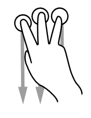
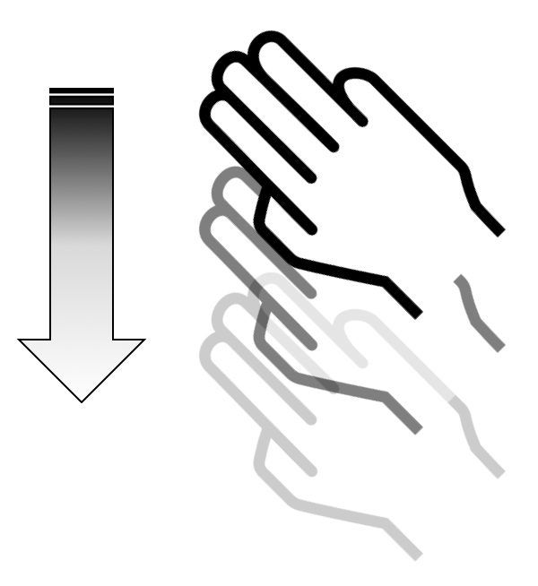

Votre avis compte
Vous avez une remarque, une suggestion à apporter ?
Vérifiez que ceci n’a pas déjà été remonté par quelqu’un d’autre en consultant la liste des « issues » sur notre compte github.
Si vous ne trouvez rien concernant votre remarque, adressez-nous votre commentaire via github.
À propos
Documentation sous licence CC BY SA 3.0. Le code source de ce site ainsi que celui des exemples est disponible sur notre compte github.
Le logo Orange ainsi que certaines images et captures sont la propriété d'Orange :
Copyright (C) 2016 Orange SA All rights reserved
Liste des fichiers concernés
Les critères incontournables sous Android pour le développement
Ce guide a pour objectif de présenter les différentes options d’accessibilité du SDK Android. À travers différentes catégories, ce guide explique comment utiliser les attributs et méthodes d’accessibilité et propose des liens vers la documentation officielle de Google. Des exemples de codes sont aussi présents pour illustrer les propos.
Alternatives textuelles
Description :
Sous Android, la vocalisation d’un élément s’effectue à travers un attribut, à savoir le contentDescription. Cet attribut qui accepte une simple chaîne de caractère en paramètre (et donc internationalisable) redéfinit complètement le texte qui sera lu par le service d’accessibilité et notamment TalkBack. Cela permet d’avoir un texte de composant plus explicite que celui affiché à l’écran. Par exemple, dans le cas d’un bouton dont le titre est « OK », on pourra indiquer que le bouton sert à valider un choix.
Le contentDescription doit aussi être utilisé sur les éléments custom pour indiquer leur nature. Par exemple, un LinearLayout que l’on rendrait cliquable doit avoir un contentDescription de la forme « nom_du_bouton, bouton » (il faut également permettre le focus du bouton pour l’accessibilité, voir la section correspondante).
À noter que le contentDescription est disponible sous tout élément qui hérite de View. Il est donc possible de positionner un contentDescription sur une TextView par exemple, comme montré dans la section « guide d’accessibilité – alternative textuelle – abréviations, dates et heures ».
Exemples :
Exemple simple (internationalisé) :myTextView.setContentDescription(getString(R.string.criteria_alt_ex1_cd_txt2));
Indiquer l’état et la nature de TabHost (non internationalisé) :
private class TabHostListener implements TabHost.OnTabChangeListener {
[...]
public void onTabChanged(String tabId) {setContentDescription(mTabHost, mTabsLabel);}
}
private void setContentDescription(TabHost mTabHost, String[] mTabsLabel) {
int tab = mTabHost.getCurrentTab();
int tabCount = mTabHost.getTabWidget().getTabCount();
for (int tabNumber = 0; tabNumber < tabCount; tabNumber++) {
CharSequence contentDescription = mTabsLabel[tabNumber];
contentDescription = contentDescription + ", onglet " + (tabNumber + 1) + " sur " + tabCount;
if (tabNumber == tab) {
contentDescription = contentDescription + ", sélectionné";
}
mTabHost.getTabWidget().getChildAt(tabNumber).setContentDescription(contentDescription);
}
}Lien :
Masquer des éléments à l’accessibilité
Description :
Il est possible via un attribut d’accessibilité de masquer des éléments aux outils d’accessibilité (TalkBack par exemple). Par extension, il est possible de forcer certains éléments à être visibles aux outils d’accessibilité.ImportantForAccessibility : suivant la valeur de l’attribut, cela permet d’indiquer qu’un élément est visible ou non de l’API d’accessibilité.
auto(0) : valeur par défaut, c’est le système qui décide. Par exemple, unButtonaura sa valeur par défaut à 1 (yes) et unLinearLayoutà 2 (no).yes(1) : la vue est importante pour l’accessibilité. Elle peut par exemple recevoir le focus de TalkBack.no(2) : la vue n’est pas importante pour l’accessibilité. Elle ne déclenche plus d’événement d’accessibilité et est par conséquent ignorée par des services tel que TalkBack.noHideDescendants(4) : la vue n’est pas importante pour l’accessibilité, mais également toutes ses vues filles. Cela permet de cacher tous les éléments d’une vue à l’accessibilité en une seule fois. Très utile sur les éléments custom.
À noter : l’attribut « importantForAccessibility » est disponible pour tout élément qui hérite de View.
Exemples :
Depuis le xml :
android:importantForAccessibility="no"
Depuis le code :
myView.setImportantForAccessibility(View.IMPORTANT_FOR_ACCESSIBILITY_NO_HIDE_DESCENDANTS);
Lien :
Déclencher une vocalisation
Description :
Il est très facile de déclencher des vocalisations avec TalkBack. Déclencher une vocalisation est très utile dans le cas de contenu dynamique, au même titre que les LiveRegion (voir la section correspondante). Pour déclencher une vocalisation, il suffit de faire appel à la méthode announceForAccessibility en lui passant en paramètre l’id de la chaîne de caractères à vocaliser.
À noter : la méthode announceForAccessibility est disponible sur tout élément qui hérite de View et se fait dans la langue du système.
Attention: nous parlons ici de vocalisation TalkBack et non pas de TTS (Text To Speech) qui peut fonctionner indépendamment du statut de TalkBack.
Exemple :
Il est fréquent de tester la version d’Android avant de déclencher une vocalisation TalkBack. En effet, announceForAccessibility ne fonctionne que depuis l’arrivée d’Android Jelly Bean.
if (Build.VERSION.SDK_INT >= Build.VERSION_CODES.JELLY_BEAN) {
getView().announceForAccessibility(getString(R.string.criteria_contentchange_ex1_announce));
}Lien :
Détecter si TalkBack est activé
Description :
Sous Android, il est possible de savoir si l’API d’accessibilité est activée, et par extension de savoir si TalkBack est activé.
À l’usage :
AccessibilityManager am = (AccessibilityManager) context.getSystemService(ACCESSIBILITY_SERVICE);
boolean isAccessibilityEnabled = am.isEnabled();Régions live (contenu dynamique)
Description :
Il est possible de spécifier à une vue qu’elle est une région « live », c’est-à-dire que son contenu est susceptible d’être modifié dynamiquement et qu’elle doit dans ce cas prévenir l’API d’accessibilité. Cela aura pour conséquence de générer des vocalisations avec TalkBack. Un exemple type d’utilisation : sur un formulaire, si l’utilisateur fait une erreur et qu’un message d’erreur apparaît, la vue contenant le message doit être définie comme une région « live ».
Il faut passer par la méthode setAccessibilityLiveRegion qui prend en paramètre un mode pour la région live. Il existe 3 modes :
ACCESSIBILITY_LIVE_REGION_NONE: cette vue n’est pas une région « live ». C’est la valeur par défaut de la plupart des vues.ACCESSIBILITY_LIVE_REGION_POLITE: en cas de changement dans la vue, des vocalisations sont effectuées sur les changements. Ces vocalisations sont « polies » : elles sont moins prioritaires que les vocalisations système par exemple.ACCESSIBILITY_LIVE_REGION_ASSERTIVE: en cas de changement dans la vue, des vocalisations seront effectuées sur les changements. Ces vocalisations sont « rude » : elles sont prioritaires et immédiatement vocalisées.
À noter : la méthode setAccessibilityLiveRegion est disponible sur tout élément qui hérite de View.
Exemples :
<TextView
[...]
android:accessibilityLiveRegion="polite" />Lien :
Gérer l’ordre de lecture (TalkBack)
Description :
L’ordre du focus de la synthèse vocale par défaut prend en compte plusieurs paramètres : la lecture « logique », (en France) soit de gauche à droite et de haut en bas, et la lecture du xml (ordre de déclaration des éléments). Il est tout à fait possible de redéfinir cet ordre de lecture avec deux outils :
accessibilityTraversalAfter: prend un id en paramètre et permet de spécifier à la vue qu’elle doit être décrite par l’accessibilité après la vue passée en paramètre.accessibilityTraversalBefore: prend un id en paramètre et permet de spécifier à la vue qu’elle doit être décrite par l’accessibilité avant la vue passée en paramètre.
À noter : ces attributs peuvent être utilisés directement dans le xml mais également dans le code via les méthodes setAccessibilityTraversalAfter et setAccessibilityTraversalBefore. Ces méthodes sont disponibles pour tout élément qui hérite de View.
Exemple :
volupButton.setAccessibilityTraversalAfter(myView.findViewById(R.id.remote0).getId());
voldownButton.setAccessibilityTraversalAfter(myView.findViewById(R.id.volup).getId());
chaineplusButton.setAccessibilityTraversalAfter(myView.findViewById(R.id.voldown).getId());
chainemoinsButton.setAccessibilityTraversalAfter(myView.findViewById(R.id.chaineplus).getId());Liens :
Formulaires
Description :
Il est important que les champs de formulaire soient liés à un label. Il existe 2 grandes techniques pour réaliser cette liaison :
labelFor: permet de spécifier à une vue qu’elle est le label d’une autre vue. Cette méthode prend en paramètre l’idde la vue que l’on labellise. On peut utiliser cette méthode avec quasiment tout type de champ de formulaire. Utilisable depuis le xmlandroid:labelForou le codesetLabelFor.LabelForest utilisable depuis tout élément qui hérite deView.hint: pour lesEditTextouTextView. Permet d’ajouter un texte d’exemple quand le champ de texte est vide. Cette méthode ne marche que pour lesTextView. Prend en paramètre l’idd’une chaîne de caractère. Utilisable depuis le xmlandroid:hintou le codesetHint.
Exemples :
LabelFor dans le xml :
<TextView
[...]
android:labelFor="@+id/imageView11"
android:importantForAccessibility="no" />Remarque : il est très fréquent, une fois le label lié à son champ, de masquer le label à l’accessibilité. En effet, celui ci n’a plus besoin d’être reconnu par l’API d’accessibilité car son champ de formulaire l’utilise déjà (et sera donc restitué vocalement par TalkBack par exemple).
Hint dans le xml :
<EditText
[...]
android:hint="@string/criteria_form_ex1_placeholder" />Liens :
Taille des textes
Description :
Afin de permettre à l’option « grands caractères » d’interagir correctement avec l’application, plusieurs points sont à respecter durant les développements.
- Utiliser une taille de police dynamique : le « sp ». Cette unité, spécifique à Android, permet d’obtenir une taille de police en fonction de la densité de pixel de l’écran. Il est plus que recommandé de l’utiliser, ne serait-ce que pour obtenir un design uniforme sur tous les types de devices Android.
- Gérer les débordements de contenu : une erreur courante est d’utiliser une taille de texte dynamique (« sp » donc) mais de ne pas faire attention au conteneur. Si le texte grossit, le conteneur doit en faire autant pour ne pas qu’il y ait de débordement. On peut parfaitement jouer avec le
min-heightet leheightdes conteneurs pour obtenir un résultat correct (unheightenwrap_contentpermet de laisser au système le soin de s’adapter).
Lien :
Événements d’accessibilité & custom views
Description :
Il existe sous Android un bon nombre d’événements liés à l’API d’accessibilité. Vous pouvez manipuler ces événements au même titre que d’autres événements. Ils permettent d’enrichir des composants custom insuffisamment accessibles. L’utilisation des événements d’accessibilité est assez rare dans les applications non dédiées à l’accessibilité, les autres options étant généralement suffisantes. Cependant, il faut savoir qu’ils existent et permettent de surcharger la vocalisation d’un composant.
Pour plus d’informations, nous vous invitons à regarder les liens ci-dessous.
Exemple :
Dans cet exemple, on intercepte les événements d’accessibilité. En fonction de leur type (un texte a changé dans la vue ou TalkBack a mis le focus sur le composant), nous construisons une vocalisation à destination de TalkBack.
@Override
@TargetApi(Build.VERSION_CODES.ICE_CREAM_SANDWICH)
public boolean dispatchPopulateAccessibilityEvent(AccessibilityEvent event) {
boolean result = super.dispatchPopulateAccessibilityEvent(event);
// Detect what type of accessibility event is being passed in.
int eventType = event.getEventType();
// Common case: The user has interacted with our view in some way. State may or may not have been changed. Read out the current status of the view.
if (eventType == AccessibilityEvent.TYPE_VIEW_TEXT_CHANGED) {
event.getText().clear();
event.getText().add("Valeur de la cagnotte : " + getBankValue() + ".");
result = true;
}
// When a user first focuses on our view, we’ll also read out some simple instructions to make it clear that this is an interactive element.
if (eventType == AccessibilityEvent.TYPE_VIEW_ACCESSIBILITY_FOCUSED) {
event.getText().add("Cliquez pour lancer la roue et augmenter vos gains.");
result = true;
}
return result;
}Liens :
WebView
Description :
Les WebView ont un traitement un peu particulier sous Android. Pour commencer, si on veut qu’une page soit accessible, il faut que le contenu HTML le soit, à savoir qu’il respecte les normes internationales sur le sujet : les WCAG2. Pour connaître ces règles et apprendre les techniques de développement pour un web accessible, nous vous invitons à visiter la section de notre site consacrée au sujet : recommandations accessibilité pour le web.
Côté Android, il faut s’assurer que la WebView autorise le JavaScript : mWebView.getSettings.setJavaScriptEnabled(true);
Dans ces conditions, la page affichée à travers la WebView réagit convenablement à l’API d’accessibilité.
Vocalisation des listes
Description :
Il arrive parfois que les listes soient mal vocalisées : la synthèse vocale tente de vocaliser toute la liste en une seule fois (au moins ce qui est affiché à l’écran dans le cas de listes longues). C’est notamment le cas lorsque l’on utilise des RecyclerView. Pour pallier ce problème, une solution simple existe. Il suffit de positionner l’attribut focusable à true pour chaque item de la liste. Cela a pour effet de forcer la synthèse vocale (TalkBack) à lire les items un par un.
Navigation au focus (clavier)
Description :
Pour gérer la navigation au focus, il faut s’assurer de 3 choses :
- Permettre le focus sur les éléments interactifs : la navigation au focus ne concerne que les éléments interactifs. Si, par exemple, votre application possède des vues custom cliquables, il faut s’assurer que ces vues soient focusables en positionnant l’attribut
focusableàtrue. - Gérer l’affichage du focus : tout élément interactif peut recevoir le focus, il faut donc que le
state_focusedsoit défini et permette de distinguer d’un seul coup d’œil quel élément a le focus. - Gérer l’ordre du focus : à travers les options
nextFocusDown,nextFocusUp,nextFocusRightetnextFocusLeft, vous pouvez spécifier quelle vue doit prendre le focus selon l’utilisation des flèches bas, haut, droit et gauche.
La plupart du temps, seuls les point 1 et 2 sont à prendre la compte. En effet, le système Android est capable de déterminer assez précisément les positions des éléments les uns par rapport aux autres et donc de fournir un ordre de lecture au clavier logique et cohérent.
À noter : nextFocusDown, nextFocusUp, nextFocusRight, nextFocusLeft, focusable ainsi que d’autres options de gestion du focus sont accessibles directement dans le xml ou dans le code à travers les méthodes correspondantes.
Exemple :
Exemple de sélecteur pour TabHost qui prend en compte l’état state_focused :
<selector xmlns:android="http://schemas.android.com/apk/res/android">
<!-- Non focused states -->
<item android:state_focused="false" android:state_selected="false" android:state_pressed="false" android:drawable="@drawable/tab_unselected_tab_selector" />
<item android:state_focused="false" android:state_selected="true" android:state_pressed="false" android:drawable="@drawable/tab_selected_tab_selector" />
<!-- Focused states -->
<item android:state_focused="true" android:state_selected="false" android:state_pressed="false" android:drawable="@drawable/tab_unselected_focused_tab_selector" />
<item android:state_focused="true" android:state_selected="true" android:state_pressed="false" android:drawable="@drawable/tab_selected_focused_tab_selector" />
<!-- Pressed -->
<!-- Non focused states -->
<item android:state_focused="false" android:state_selected="false" android:state_pressed="true" android:drawable="@drawable/tab_unselected_pressed_tab_selector" />
<item android:state_focused="false" android:state_selected="true" android:state_pressed="true" android:drawable="@drawable/tab_selected_pressed_tab_selector" />
<!-- Focused states -->
<item android:state_focused="true" android:state_selected="false" android:state_pressed="true" android:drawable="@drawable/tab_unselected_pressed_tab_selector" />
<item android:state_focused="true" android:state_selected="true" android:state_pressed="true" android:drawable="@drawable/tab_selected_pressed_tab_selector" />
</selector>Lien :
Les critères incontournables sous iOS pour le développement
Ce guide a pour objectif de présenter les différentes options du SDK d’accessibilité sous iOS 11 en associant :
- Des explications détaillées concernant les attributs et méthodes d'accessibilité.
- Des exemples de code en Swift 4 et en Objective C.
... et des liens vers la documentation officielle d'Apple.
Alternatives textuelles
Description
Sous iOS, la vocalisation d’un élément s’effectue à travers 4 attributs : label, hint, value et trait.
L’ordre de vocalisation est toujours le même (label, value, trait et hint), il ne peut pas être changé et la vocalisation est réalisée en une seule fois à l’arrivée sur l’élément.
Une section de ce guide étant dédiée au trait, nous décrivons ici les 3 autres attributs :
- accessibilityLabel : le label permet de préciser le titre spécifique à l’accessibilité qui est lu par VoiceOver en lieu et place du texte du composant si celui-ci en possède un, ce qui permet d’avoir un texte de composant plus explicite que celui affiché à l’écran. Par exemple, dans le cas d’un bouton dont le titre est « OK », on peut indiquer que le bouton sert à valider un choix.
- accessibilityValue : la valeur d’un élément est, par défaut, le pourcentage de progression.
À noter que, pour la plupart des éléments ajustables disponibles dans le SDK, cette
valuen’a pas besoin d’être précisée car le système restitue automatiquement la valeur à l’utilisateur via VoiceOver. - accessibilityHint : le
hintpermet de décrire le comportement du composant en incorporant des explications supplémentaires. Exemple : « cliquez pour obtenir le résultat ».
Ces attributs sont disponibles via l’interface builder de Xcode mais également accessibles en programmation.
Tout élément dérivant de UIView possède ces attributs qui acceptent une chaîne de caractère les rendant subséquemment internationalisables.
Exemple
@interface ChangeTextView() {
__weak IBOutlet UILabel * monLabel;
__weak IBOutlet UIProgressView * maProgressView;
}
@end
@implementation ChangeTextView
- (void)viewDidAppear:(BOOL)animated {
[super viewDidAppear:animated];
monLabel.accessibilityLabel = @"bonjour";
monLabel.accessibilityHint = @"Ceci est un commentaire supplémentaire.";
maProgressView.accessibilityValue = @"45 pour cent";
}
@end
class ChangeTextView: UIViewController {
@IBOutlet weak var monLabel: UILabel!
@IBOutlet weak var maProgressView: UIProgressView!
override func viewDidAppear(_ animated: Bool) {
super.viewDidAppear(animated)
monLabel.accessibilityLabel = "bonjour"
monLabel.accessibilityHint = "Ceci est un commentaire supplémentaire."
maProgressView.accessibilityValue = "45 pour cent"
}
}
Liens
Nature des éléments
Description
L’attribut accessibilityTraits permet de donner une information à l’API d’accessibilité sur la nature d’un composant.
On peut décider ainsi qu’un item de liste soit pris en compte comme un bouton par VoiceOver car celui-ci est cliquable.
De ce fait, l’accessibilityTrait joue également sur la vocalisation de l’élément car cette nature est restituée par VoiceOver.
Cet attribut d’accessibilité est disponible via l’interface builder de Xcode mais également utilisable directement via le code.
Il existe beaucoup de traits dont les principaux sont fournis ci-dessous :
- accessibilityTraitNone : supprime toute valeur sémantique à l’élément.
- accessibilityTraitButton : ajoute le trait « bouton », l’élément est vu comme un bouton par VoiceOver.
- accessibilityTraitLink : utile pour définir un label en tant que « lien ».
- accessibilityTraitHeader : permet de définir un élément comme un en-tête (voir la section « titre et en-tête »).
- accessibilityTraitAdjustable : permet de définir un élément comme un élément « ajustable », c’est-à-dire un élément dont la valeur instantanée peut être modifiée via un geste spécifique de VoiceOver.
Exemple
- (void)customTraits() {
//Spécification d'un UIPageControl avec le trait ’ajustable’.
pageControl.accessibilityTraits = UIAccessibilityTraitAdjustable;
//Ajout d'un en-tête.
defaultHeaderViewCell.accessibilityTraits = UIAccessibilityTraitHeader;
//Combinaison possible de plusieurs traits.
onePageButton.accessibilityTraits = UIAccessibilityTraitButton + UIAccessibilityTraitSelected;
}
func customTraits() {
//Spécification d'un UIPageControl avec le trait ’ajustable’.
pageControl.accessibilityTraits = UIAccessibilityTraitAdjustable
//Ajout d'un en-tête.
defaultHeaderViewCell.accessibilityTraits = UIAccessibilityTraitHeader
//Combinaison possible de plusieurs traits.
onePageButton.accessibilityTraits = UIAccessibilityTraitButton + UIAccessibilityTraitSelected
}
Lien
Masquer des éléments à l’accessibilité
Description
Il est possible de masquer des éléments aux outils d’accessibilité grâce aux attributs d’accessibilité mais aussi de forcer certains éléments à être visibles pour les outils d’accessibilité uniquement.
- isAccessibilityElement : booléen qui permet d’indiquer qu’un élément est visible ou non de l’API d’accessibilité (de VoiceOver ou autre).
- accessibilityElementsHidden : booléen qui permet d’indiquer que les éléments fils de l’élément cible sont visibles ou non de l’API d’accessibilité.
- accessibilityViewIsModal : booléen qui permet de rendre visible ou non les éléments frères de l’élément cible à l’API d’accessibilité. Très utile pour rendre accessible des popup custom view par exemple.
L’attribut accessibilityElement est disponible via l’interface builder de Xcode mais est également utilisable directement via le code.
Les deux autres attributs sont utilisables uniquement via le code.
Exemple
L'idée est de créer un carré rouge qui va contenir 2 autres carrés (bleu et jaune) pour appliquer les attributs définis précedémment.

- (void)viewDidAppear:(BOOL)animated {
[super viewDidAppear:animated];
//Création d'un élément père dans lequel 2 autres éléments fils vont être insérés.
CGRect parentViewRect = CGRectMake(100.0, 100.0, 40.0, 40.0);
UIView * myParentView = [[UIView alloc]initWithFrame:parentViewRect];
myParentView.backgroundColor = [UIColor redColor];
[UIApplication.sharedApplication.keyWindow addSubview:myParentView];
//L'élément père ne doit pas être accessible pour servir de conteneur à ses enfants.
//Si la valeur est à 'YES', seul cet élément sera accessible sans ses enfants.
myParentView.isAccessibilityElement = NO;
//Indication du conteneur que ses enfants peuvent ne pas être accessibles même s'ils sont définis comme tels.
//Si cette valeur est à 'NO' et la précedénte à 'NO', seuls ces élements seront accessibles.
myParentView.accessibilityElementsHidden = NO;
[self createViewWithColor:[UIColor yellowColor]
inside:myParentView];
[self createViewWithColor:[UIColor blueColor]
inside:myParentView];
}
- (void)createViewWithColor:(UIColor*)color
inside:(UIView*)parentView {
float delta = (color == [UIColor yellowColor]) ? 0.0 : 20.0;
CGRect rect = CGRectMake(10.0 + delta, 10.0 + delta, 10.0, 10.0);
UIView * theView = [[UIView alloc]initWithFrame:rect];
theView.backgroundColor = color;
[parentView addSubview:theView];
theView.isAccessibilityElement = YES;
}
override func viewDidAppear(_ animated: Bool) {
super.viewDidAppear(animated)
//Création d'un élément père dans lequel 2 autres éléments fils vont être insérés.
let parentViewRect = CGRect.init(x: 100.0,
y: 100.0,
width: 40.0,
height: 40.0)
let myParentView = UIView.init(frame: parentViewRect)
myParentView.backgroundColor = .red
UIApplication.shared.keyWindow?.addSubview(myParentView)
//L'élément père ne doit pas être accessible pour servir de conteneur à ses enfants.
//Si la valeur est à 'true', seul cet élément sera accessible sans ses enfants.
myParentView.isAccessibilityElement = false
//Indication du conteneur que ses enfants peuvent ne pas être accessibles même s'ils sont définis comme tels.
//Si cette valeur est à 'false' et la précedénte à 'false', seuls ces élements seront accessibles.
myParentView.accessibilityElementsHidden = false
self.createViewWithColor(.yellow, inside: myParentView)
self.createViewWithColor(.blue, inside: myParentView)
}
func createViewWithColor(_ color:UIColor, inside parentView:UIView) {
let delta:CGFloat = ((color == .yellow) ? 0.0 : 20.0)
let rect = CGRect.init(x: 10.0 + delta,
y: 10.0 + delta,
width: 10.0,
height: 10.0)
let theView = UIView.init(frame: rect)
theView.backgroundColor = color
parentView.addSubview(theView)
theView.isAccessibilityElement = true
}
Liens
Déclencher une vocalisation
Description
Il est très facile de déclencher des vocalisations avec VoiceOver. Attention, nous parlons de vocalisation avec VoiceOver (ce qui implique que VoiceOver soit activé) et pas de TTS (Text To Speech) qui fonctionne indépendamment de l’activation ou non de VoiceOver. Pour déclencher une vocalisation qui se fera dans la langue du système, il faut envoyer une notification à l’API d’accessibilité via la méthode UIAccessibilityPostNotification avec en paramètres la notification permettant de déclencher une vocalisation UIAccessibilityAnnouncementNotification et la chaîne de caractères à vocaliser.
Exemple
UIAccessibilityPostNotification(UIAccessibilityAnnouncementNotification, @"Message pour la vocalisation.");
UIAccessibilityPostNotification(UIAccessibilityAnnouncementNotification, "Message pour la vocalisation.")
Liens
Connaître l’état des options d’accessibilité
Description
Est-ce que VoiceOver est activé ? Est-ce que le mode audio-mono est activé ?
Plusieurs fonctions du framework UIKit permettent de connaître les statuts de ces options d'accessibilité.
La plus utile est certainement celle qui permet de savoir si VoiceOver est activé au moment de l’appel (UIAccessibilityIsVoiceOverRunning).
D'autres fonctions, peut-être moins utiles à première vue, sont fournies dans les liens ci-après.
Exemple
BOOL isVoiveOverRunning = (UIAccessibilityIsVoiceOverRunning() ? 1 : 0);
BOOL isSwitchControlRunning = (UIAccessibilityIsSwitchControlRunning() ? 1 : 0);
NSLog(@"VoiceOver vaut %d et SwitchControl vaut %d.", isVoiveOverRunning, isSwitchControlRunning);
let isVoiceOverRunning = (UIAccessibilityIsVoiceOverRunning() ? 1 : 0)
let isSwitchControlRunning = (UIAccessibilityIsSwitchControlRunning() ? 1 : 0)
print("VoiceOver vaut \(isVoiceOverRunning) et SwichControl vaut \(isSwitchControlRunning).")
Liens
UIAccessibilityDarkerSystemColorsEnabledUIAccessibilityIsAssistiveTouchRunningUIAccessibilityIsBoldTextEnabledUIAccessibilityIsClosedCaptioningEnabledUIAccessibilityIsGrayscaleEnabledUIAccessibilityIsGuidedAccessEnabledUIAccessibilityIsInvertColorsEnabledUIAccessibilityIsMonoAudioEnabledUIAccessibilityIsReduceMotionEnabledUIAccessibilityIsReduceTransparencyEnabledUIAccessibilityIsShakeToUndoEnabledUIAccessibilityIsSpeakScreenEnabledUIAccessibilityIsSpeakSelectionEnabledUIAccessibilityIsSwitchControlRunningUIAccessibilityIsVoiceOverRunning
Informer d’une modification sur la page
Description
Lors d’un changement de contenu sur une page, il est possible de notifier l’API d’accessibilité de ce changement à travers différentes notifications.
Pour ce faire, il faut envoyer une notification de modification à l’API d’accessibilité via la méthode UIAccessibilityPostNotification.
Il existe plusieurs notifications de modification, mais les deux plus utiles sont :
- UIAccessibilityLayoutChangedNotification : permet de spécifier à l’API d’accessibilité qu’une partie de la page a été modifiée et doit être accompagné d'un
NSStringou d'unUIObject. Avec unNSString, la notification se comporte comme une UIAccessibilityAnnouncementNotification et lance une vocalisation VoiceOver. Avec unUIObject, le focus est repositionné sur l’élément précisé. Cette notification est très similaire à UIAccessibilityAnnouncementNotification mais son utilisation doit être mise en avant dès lors qu'une modification dynamique du contenu se produit. - UIAccessibilityScreenChangedNotification : permet d’annoncer un changement global de la page et accepte soit
nil, soit l’élément qui doit recevoir le focus. Avecnil, la notification vocalise et sélectionne le premier élément accessible de la page. Avec unUIObject, le focus est repositionné sur l’élément précisé en lançant une vocalisation VoiceOver. Le son utilisé pour notifier la modification est similaire à l'arrivée d'une nouvelle page.
Exemple
//L'élément 'myLabel' est sélectionné et vocalisé avec sa nouvelle valeur.
- (IBAction)tapHere:(UIButton *)sender {
myLabel.accessibilityLabel = @"Ceci est un nouveau label.";
UIAccessibilityPostNotification(UIAccessibilityLayoutChangedNotification, myLabel);
}
//Le premier élément accessible de la page est sélectioné et vocalisé avec un son spécifique.
- (IBAction)clic:(UIButton *)sender {
UIAccessibilityPostNotification(UIAccessibilityScreenChangedNotification, nil);
}
//L'élément 'myLabel' est sélectionné et vocalisé avec sa nouvelle valeur.
@IBAction func clicHere(_ sender: UIButton) {
myLabel.accessibilityLabel = "Ceci est un nouveau label."
UIAccessibilityPostNotification(UIAccessibilityLayoutChangedNotification, myLabel)
}
//Le premier élément accessible de la page est sélectioné et vocalisé avec un son spécifique.
@IBAction func clic(_ sender: UIButton) {
UIAccessibilityPostNotification(UIAccessibilityScreenChangedNotification, mySecondLabel)
}
Liens
UIAccessibilityPostNotificationUIAccessibilityLayoutChangedNotificationUIAccessibilityScreenChangedNotificationUIAccessibilityPageScrolledNotification
Modifier la langue de vocalisation
Description
Afin de modifier la langue de prononciation de VoiceOver pour un mot ou un texte, il existe l’attribut accessibilityLanguage . Disponible via le protocole UIAccessibility, cet attribut permet de redéfinir la langue de prononciation d’un texte.
Par exemple, si on utilise cet attribut sur un UILabel, alors celui-ci sera vocalisé par VoiceOver dans la nouvelle langue donnée en valeur de l’attribut.
Exemple
- (IBAction)tapHere:(UIButton *)sender {
myLabel.accessibilityLanguage = @"en";
myLabel.accessibilityLabel = @"This is a new label. Thank you.";
UIAccessibilityPostNotification(UIAccessibilityLayoutChangedNotification, myLabel);
}
@IBAction func tapHere(_ sender: UIButton) {
myLabel.accessibilityLanguage = "en"
myLabel.accessibilityLabel = "This is a new label. Thank you."
UIAccessibilityPostNotification(UIAccessibilityLayoutChangedNotification, myLabel)
}
Lien
Modifier la zone de focus de VoiceOver
Description
Dans le cas d’objet modifié dynamiquement ou d’élément ne dérivant pas de UIView, il est possible de déterminer la zone géographique d’accessibilité de cet élément, c’est-à-dire la zone que VoiceOver met en surbrillance lors du focus.
- accessibilityFrame : permet de définir cette zone via un rectangle (
CGRect). Par défaut pour un élément dérivant deUIView, cette zone est la partie « visible » de la vue. - accessibilityPath : équivalent à
AccessibilityFramemais permet de définir la zone via des courbes de Bézier. - accessibilityActivationPoint : le « point » d’activation d’un élément pour les outils d’accessibilité. Par défaut, ce point est au centre de l’élément.
Exemple

float xVal;
float yVal;
float widthVal;
float heightVal;
- (void)viewDidAppear:(BOOL)animated {
[super viewDidAppear:animated];
xVal = myLabel.accessibilityFrame.origin.x;
yVal = myLabel.accessibilityFrame.origin.y;
widthVal = myLabel.accessibilityFrame.size.width;
heightVal = myLabel.accessibilityFrame.size.height;
}
//Première façon d'augmenter la zone de focus.
- (IBAction)tapHere:(UIButton *)sender {
myLabel.accessibilityFrame = CGRectMake(xVal,
yVal,
widthVal + 100.0,
heightVal+ 100.0);
UIAccessibilityPostNotification(UIAccessibilityLayoutChangedNotification, myLabel);
}
//Seconde façon d'augmenter la zone de focus (Bézier).
- (IBAction)clic:(UIButton *)sender {
UIBezierPath * bezierPath = [UIBezierPath bezierPath];
[bezierPath moveToPoint:CGPointMake(xVal, yVal)];
[bezierPath addLineToPoint:CGPointMake(xVal + widthVal + 100.0,
yVal)];
[bezierPath addLineToPoint:CGPointMake(xVal + widthVal + 100.0,
yVal + heightVal+ 100.0)];
[bezierPath addLineToPoint:CGPointMake(xVal,
yVal + heightVal+ 100.0)];
[bezierPath closePath];
myLabel.accessibilityPath = bezierPath;
UIAccessibilityPostNotification(UIAccessibilityLayoutChangedNotification, myLabel);
}
var xVal: CGFloat = 0.0
var yVal: CGFloat = 0.0
var widthVal: CGFloat = 0.0
var heightVal: CGFloat = 0.0
override func viewDidAppear(_ animated: Bool) {
super.viewDidAppear(animated)
xVal = myLabel.accessibilityFrame.origin.x;
yVal = myLabel.accessibilityFrame.origin.y;
widthVal = myLabel.accessibilityFrame.size.width;
heightVal = myLabel.accessibilityFrame.size.height;
}
//Première façon d'augmenter la zone de focus.
@IBAction func clicHere(_ sender: UIButton) {
myLabel.accessibilityFrame = CGRect.init(x: xVal,
y: yVal,
width: widthVal + 100.0,
height: heightVal + 100.0)
UIAccessibilityPostNotification(UIAccessibilityLayoutChangedNotification, myLabel)
}
//Seconde façon d'augmenter la zone de focus (Bézier).
@IBAction func clic(_ sender: UIButton) {
let bezierPath = UIBezierPath.init()
bezierPath.move(to: CGPoint.init(x: xVal, y: yVal))
bezierPath.addLine(to: CGPoint.init(x: xVal + widthVal + 100.0,
y: yVal))
bezierPath.addLine(to: CGPoint.init(x: xVal + widthVal + 100.0,
y: yVal + heightVal + 100.0))
bezierPath.addLine(to: CGPoint.init(x: xVal,
y: yVal + heightVal + 100.0))
bezierPath.close()
myLabel.accessibilityPath = bezierPath
UIAccessibilityPostNotification(UIAccessibilityScreenChangedNotification, myLabel)
}
Liens
Grouper des éléments
Description
On peut envisager de grouper des éléments pour vocaliser l'ensemble formé en une seule fois et associer au groupe ainsi créé une action dédiée par exemple. Dans ce cas, on va créer une vue qui va englober les éléments impactés puis implémenter une action qui va indiquer l'action à réaliser en cas d'activation de la zone par l'utilisateur. Dès lors, les éléments encapsulés ne doivent plus être considérés comme accessibles car seul leur conteneur doit être perçu comme tel. Une autre possibilité de groupement d'éléments pourrait utiliser l’attribut shouldGroupAccessibilityChildren, booléen qui permet d’indiquer à VoiceOver qu’il doit grouper les enfants de la vue qui porte l’attribut. Cela permet notamment de faire des vocalisations uniques ou de définir un ordre de lecture VoiceOver particulier pour une partie de la page seulement (voir la section Ordre de lecture).
Exemple
Nous avons un 'label' et un 'switch control' que nous allons souhaitons regrouper et traiter d'un seul bloc.

- (void)viewDidAppear:(BOOL)animated {
[super viewDidAppear:animated];
//Création de la vue qui va encapsuler le 'label' et le 'Switch Control'.
CGRect wrapFrame = CGRectUnion(myLabel.frame, mySwitchControl.frame);
wrapView = [[UIView alloc]initWithFrame: wrapFrame];
wrapView.isAccessibilityElement = YES;
wrapView.accessibilityLabel = myLabel.accessibilityLabel;
wrapView.accessibilityValue = mySwitchControl.accessibilityValue;
//Création de la manipulation qui va permettre une action sur la vue précédente.
UITapGestureRecognizer * tapGesture = [[UITapGestureRecognizer alloc] initWithTarget:self
action:@selector(changeValue:)];
tapGesture.numberOfTapsRequired = 1;
[wrapView addGestureRecognizer:tapGesture];
[self.view addSubview:wrapView];
}
- (void)changeValue:(UITapGestureRecognizer *)sender {
mySwitchControl.on = ![mySwitchControl.accessibilityValue boolValue];
}
override func viewDidAppear(_ animated: Bool) {
super.viewDidAppear(animated)
//Création de la vue qui va encapsuler le 'label' et le 'Switch Control'.
let wrapFrame = myLabel.frame.union(mySwitchControl.frame)
let wrapView = UIView.init(frame: wrapFrame)
wrapView.isAccessibilityElement = true
wrapView.accessibilityLabel = myLabel.accessibilityLabel
wrapView.accessibilityValue = mySwitchControl.accessibilityValue
//Création de la manipulation qui va permettre une action sur la vue précédente.
let tapGesture = UITapGestureRecognizer.init(target: self,
action: #selector(changeValue(sender:)))
tapGesture.numberOfTapsRequired = 1;
wrapView.addGestureRecognizer(tapGesture)
self.view.addSubview(wrapView)
}
@objc func changeValue(sender: UITapGestureRecognizer) {
let switchBoolValue = NSString(string:mySwitchControl.accessibilityValue!).boolValue
mySwitchControl.setOn(!switchBoolValue,
animated: false)
}
Lien
Événements d’accessibilité
Description
Le système iOS envoie un certain nombre d’événements d’accessibilité à destination des applications lors de la modification des options d’accessibilité. Par exemple, si VoiceOver est désactivé durant l’utilisation de l’application, celle-ci recevra l’événement UIAccessibilityVoiceOverStatusDidChange, ce qui peut être très utile couplé à la fonction UIAccessibilityIsVoiceOverRunning grâce à laquelle on peut exécuter un traitement particulier quand VoiceOver est activé. Mais que se passe-t-il si VoiceOver est désactivé alors que ce traitement a déjà eu lieu ? C’est là que les événements système peuvent être utilisés et, en restant à leur écoute, il est possible d’appliquer des traitements spécifiques de manière dynamique.
Exemple
Dans cet exemple, on appelle une méthode spécifique au moment où le statut de VoiceOver ou du Switch Control change.
- (void)viewDidAppear:(BOOL)animated {
[super viewDidAppear:animated];
[[NSNotificationCenter defaultCenter] addObserver:self
selector:@selector(methodToBeCalled:)
name:UIAccessibilitySwitchControlStatusDidChangeNotification
object:nil];
[[NSNotificationCenter defaultCenter] addObserver:self
selector:@selector(methodToBeCalled:)
name:UIAccessibilityVoiceOverStatusDidChangeNotification
object:nil];
}
- (void)methodToBeCalled:(NSNotification *)notification {
NSArray * checkStatus = @[@"NOK", @"OK"];
NSLog(@"SWITCH CONTROL is %@ and VOICE OVER is %@",
checkStatus[UIAccessibilityIsSwitchControlRunning()],
checkStatus[UIAccessibilityIsVoiceOverRunning()]);
}
override func viewDidAppear(_ animated: Bool) {
super.viewDidAppear(animated)
NotificationCenter.default.addObserver(self,
selector: #selector(methodToBeCalled(notification:)),
name: .UIAccessibilitySwitchControlStatusDidChange,
object: nil)
NotificationCenter.default.addObserver(self,
selector: #selector(methodToBeCalled(notification:)),
name: .UIAccessibilityVoiceOverStatusDidChange,
object: nil)
}
@objc private func methodToBeCalled(notification: Notification) {
let switchControlStatus = (UIAccessibilityIsSwitchControlRunning() ? "OK" : "NOK")
let voiceOverStatus = (UIAccessibilityIsVoiceOverRunning() ? "OK" : "NOK")
print("SWITCH CONTROL is \(switchControlStatus) and VOICE OVER is \(voiceOverStatus).")
}
Lien
Tous les événements sont disponibles sur la documentation officielle d'Apple.
Taille des textes
Description
Depuis iOS7, il est possible de modifier dynamiquement la taille des textes d'une application à l’aide du paramétrage du téléphone.
 Quelques points sont néanmoins essentiels pour la bonne utilisation de l'API mise à disposition :
Quelques points sont néanmoins essentiels pour la bonne utilisation de l'API mise à disposition :
Utiliser la police système pour les textes de l’application afin de se faciliter grandement la tâche même si l'utilisation d'autres polices est devenue nettement plus aisée depuis l'arrivée de
UIFontMetricsavec iOS11.__weak IBOutlet UILabel * fontHeadline; __weak IBOutlet UILabel * fontFootNote; //Utilisation de la font native pour le titre principal d'un page. UIFont * myFont = [UIFont preferredFontForTextStyle:UIFontTextStyleHeadline]; //Définition de la font pour le titre principal d'une page. UIFont * fontHead = [UIFont fontWithName:@"Chalkduster" size:30.0]; UIFontMetrics * fontHeadMetrics = [[UIFontMetrics alloc]initForTextStyle:UIFontTextStyleHeadline]; fontHeadline.font = [fontHeadMetrics scaledFontForFont:fontHead];@IBOutlet weak var fontHeadline: UILabel! @IBOutlet weak var fontFootNote: UILabel! //Utilisation de la police native par défaut pour le titre principal d'une page. let myFont = UIFont.preferredFont(forTextStyle: .headline) //Définition personnalisée de la police pour le titre principal d'une page. let fontHead = UIFont(name: "Chalkduster", size: 30.0) let fontHeadMetrics = UIFontMetrics(forTextStyle: .headline) fontHeadline.font = fontHeadMetrics.scaledFont(for: fontHead!)Penser à écouter la notification UIContentSizeCategoryDidChange qui annonce le changement de la taille du texte à partir des paramètres du téléphone. Cette tâche est simplifiée depuis iOS10 où l'attribut adjustsFontForContentSizeCategory se charge de la mise à jour automatique de la nouvelle taille de la police système au sein de l'application (cet attribut ne peut s'appliquer aux polices personnalisées qu'avec l'utilisation de
UIFontMetricsen iOS11). Il est aussi possible d'utiliser la méthode traitCollectionDidChange du protocole informelUITraitEnvironmentqui sera automatiquement appelée dès qu'une modification concernant l'environnement de l'interface iOS surviendra (class/content size, portrait/paysage).//Écoute de la notification annonçant le changement de taille de la police. [[NSNotificationCenter defaultCenter] addObserver:self selector:@selector(methodToBeCalled:) name:UIContentSizeCategoryDidChangeNotification object:nil]; //Modification automatique de la taille de la police sans utiliser la notification. fontHeadline.adjustsFontForContentSizeCategory = YES; - (void)methodToBeCalled:(NSNotification *)notification { //Il faut de nouveau affecter la police des éléments impactés lors du traitement de cette notification. fontFootNote.font = [UIFont preferredFontForTextStyle:UIFontTextStyleFootnote]; }//Écoute de la notification annonçant le changement de taille de la police. NotificationCenter.default.addObserver(self, selector:#selector(methodToBeCalled(notification:)), name: .UIContentSizeCategoryDidChange, object: nil) //Modification automatique de la taille de la police sans utiliser la notification. fontHeadline.adjustsFontForContentSizeCategory = true @objc func methodToBeCalled(notification: Notification) { //Il faut de nouveau affecter la police des éléments impactés lors du traitement de cette notification. fontFootNote.font = UIFont.preferredFont(forTextStyle: .footnote) }- Ne pas oublier d'adapter les contraintes graphiques aux éléments susceptibles de voir leur taille modifiée en privilégiant l'utilisation de valeurs dynamiques.
Liens
Taille des éléments graphiques
Description
Tout comme la taille des textes est adaptable selon les réglages d'accessibilité (voir la rubrique précédente), la taille des images ainsi que celle des éléments d'une barre de tabulation ou d'outils l'est aussi mais uniquement depuis iOS11 avec Xcode 9.
En suivant les différentes étapes ci-dessous, vous obtiendrez l'effet défini précédemment et présenté graphiquement en exemple à la fin de cette rubrique :
1. Sous Xcode, importer l'image à grossir au format pdf à la résolution x1 dans le catalogue xcassets.
2. Dans l'Image Set qui vient d'être créé, cocher la case Preserve Vector Data et spécifier Single Scale :
 3. Si un storyboard est utilisé pour intégrer l'image, cocher
3. Si un storyboard est utilisé pour intégrer l'image, cocher Adjusts Image Size dans la partie Image View, sinon mettre à true la propriété adjustsImageSizeForAccessibilityContentSizeCategory de l'image si cette opération se fait de façon programmatique :
 4. Si une barre de tabulation ou une barre d'outils est aussi à intégrer dans l'application, renouveler les 3 étapes précédentes pour chacune des images à utiliser en grossissement de l'onglet au milieu de l'écran puis associer l'image souhaitée aux différents éléments impactés :
4. Si une barre de tabulation ou une barre d'outils est aussi à intégrer dans l'application, renouveler les 3 étapes précédentes pour chacune des images à utiliser en grossissement de l'onglet au milieu de l'écran puis associer l'image souhaitée aux différents éléments impactés :
 ATTENTION : s'assurer que les contraintes mises en place initialement permettent toujours un affichage cohérent et désiré après grossissement.
ATTENTION : s'assurer que les contraintes mises en place initialement permettent toujours un affichage cohérent et désiré après grossissement.
Exemple
De façon à pouvoir tester à la fois le grossissement des images et celui d'un onglet sélectionné, on crée une application contenant une barre de tabulations contenant 2 onglets dont seul le second nous intéresse et affiche l'image du logo Orange. Après modification du grossissement de texte dans les réglages (voir la rubrique précédente), on revient dans l'application pour constater :
- Une taille de l'image Orange nettement plus conséquente.
- Au milieu de l'écran, l'affichage grossi de l'onglet sur lequel on doit appuyer de façon continue pour provoquer cettte apparition.

Lien
Ordre de lecture
Description
Redéfinir l’ordre de lecture pour VoiceOver s’effectue en respectant le protocole UIAccessibilityContainer. L’idée est d’avoir un tableau des éléments de la vue qui définit l’ordre de lecture des éléments. Il est bien souvent nécessaire d’utiliser l’attribut shouldGroupAccessibilityElement afin d’avoir un ordre précis mais pour une partie seulement de la vue (le reste étant l’ordre naturel de lecture proposé par VoiceOver).
Exemple
Le meilleur exemple pour illustrer cette fonctionnalité est le clavier pour lequel les touches sucessives ne suivent pas forcément l'ordre natif proposé par VoiceOver.
Dans cet exemple, on veut l'ordre suivant : 1, 2, 3, 4, 7, 6, 8, 9, 5.
On crée les 2 vues grise et bleue au sein desquelles on incorpore les chiffres appropriés comme défini ci-dessous :

__weak IBOutlet UIView * blueBlock;
__weak IBOutlet UIView * greyColumn;
- (void)viewDidAppear:(BOOL)animated {
[super viewDidAppear:animated];
//Lecture des 3 premiers nombres dans la vue grise.
greyColumn.shouldGroupAccessibilityChildren = YES;
// Lecture des chiffres 6, 8, 9 et 5 au sein du bloc bleu.
blueBlock.isAccessibilityElement = NO;
blueBlock.accessibilityElements = @[key_6,
key_8,
key_9,
key_5];
}
@IBOutlet weak var greyColumn: UIView!
@IBOutlet weak var blueBlock: UIView!
override func viewDidAppear(_ animated: Bool) {
super.viewDidAppear(animated)
//Lecture des 3 premiers nombres dans la vue grise.
greyColumn.shouldGroupAccessibilityChildren = true
// Lecture des chiffres 6, 8, 9 et 5 au sein du bloc bleu.
blueBlock.isAccessibilityElement = false
blueBlock.accessibilityElements = [key_6,
key_8,
key_9,
key_5]
}
Liens
Date, heure et nombres
Description
La lecture des date, heure et nombres n'est pas compliquée mais peut très vite devenir un réel casse-tête avec VoiceOver .
Lecture des dates et des heures
Si on met directement sous forme de texte la date ou l'heure dans le label, on s'aperçoit rapidement que le rendu n'est pas naturel à l'écoute.
 Il faut absolument formater les données en entrée pour obtenir une vocalisation descriptive naturelle et compréhensible.
Il faut absolument formater les données en entrée pour obtenir une vocalisation descriptive naturelle et compréhensible.

NSDateFormatter * dateFormatter = [[NSDateFormatter alloc]init];
[dateFormatter setDateFormat:@"dd/MM/yyyy HH:mm"];
NSDate * date = [dateFormatter dateFromString:@"01/04/2015 05:30"];
dateLabel.text = [NSDateFormatter localizedStringFromDate:date
dateStyle:NSDateFormatterShortStyle
timeStyle:NSDateFormatterNoStyle];
dateLabel.accessibilityLabel = [NSDateFormatter localizedStringFromDate:date
dateStyle:NSDateFormatterMediumStyle
timeStyle:NSDateFormatterNoStyle];
hourLabel.text = [NSDateFormatter localizedStringFromDate:date
dateStyle:NSDateFormatterNoStyle
timeStyle:NSDateFormatterShortStyle];
NSDateComponents * hourComponents = [[NSCalendar currentCalendar] components:NSCalendarUnitHour | NSCalendarUnitMinute
fromDate:date];
hourLabel.accessibilityLabel = [NSDateComponentsFormatter localizedStringFromDateComponents:hourComponents
unitsStyle:NSDateComponentsFormatterUnitsStyleSpellOut];
let dateFormatter = DateFormatter()
dateFormatter.dateFormat = "dd/MM/yyyy HH:mm"
let date = dateFormatter.date(from: "01/04/2015 05:30")
dateLabel.text = DateFormatter.localizedString(from: date!,
dateStyle: .short,
timeStyle: .none)
dateLabel.accessibilityLabel = DateFormatter.localizedString(from: date!,
dateStyle: .medium,
timeStyle: .none)
hourLabel.text = DateFormatter.localizedString(from: date!,
dateStyle: .none,
timeStyle: .short)
let hourComponents = Calendar.current.dateComponents([.hour, .minute],
from: date!)
hourLabel.accessibilityLabel = DateComponentsFormatter.localizedString(from: hourComponents,
unitsStyle: .spellOut)
Lecture des nombres
En indiquant la valeur d'un nombre directement dans le texte d'un label, la vocalisation se fera sur chacun des chiffres présentés rendant la véritable valeur du nombre difficile à deviner.
 Comme pour les date et heure, il faut formater la donnée en entrée pour qu'elle puisse être analysée et vocalisée selon la véritable valeur du nombre qu'elle représente.
Comme pour les date et heure, il faut formater la donnée en entrée pour qu'elle puisse être analysée et vocalisée selon la véritable valeur du nombre qu'elle représente.

NSNumber * numberValue = @54038921.7;
NSNumberFormatter * numberFormatter = [[NSNumberFormatter alloc]init];
numberFormatter.numberStyle = NSNumberFormatterDecimalStyle;
numberLabel.text = [numberFormatter stringFromNumber:numberValue];
numberLabel.accessibilityLabel = [NSNumberFormatter localizedStringFromNumber:numberValue
numberStyle:NSNumberFormatterSpellOutStyle];
let numberValue = NSNumber(value: 54038921.7)
numberLabel.text = NumberFormatter.localizedString(from: numberValue,
number: .decimal)
numberLabel.accessibilityLabel = NumberFormatter.localizedString(from: numberValue,
number: .spellOut)
Lecture des numéros de téléphone
La problématique liée à la vocalisation d'un numéro de téléphone est identique à celle des nombres puisqu'elle s'appuie entièrement sur le formatage à appliquer avec une prise en compte particulière des chiffres "0".
L'exemple donné ci-dessous concerne la numérotation française avec une logique qui peut se décliner à n'importe quel type de format de numérotation.
 L'idée est de séparer chaque paire de chiffres par une virgule qui va fournir la ponctuation vocale.
L'idée est de séparer chaque paire de chiffres par une virgule qui va fournir la ponctuation vocale.

NSString * phoneNumberValue = @"06.11.22.33.06";
NSArray * phoneNumberElts = [phoneNumberValue componentsSeparatedByString:@"."];
NSNumberFormatter * nbFormatter = [[NSNumberFormatter alloc]init];
nbFormatter.numberStyle = NSNumberFormatterSpellOutStyle;
NSMutableString * spelledOutString = [[NSMutableString alloc]init];
[phoneNumberElts enumerateObjectsUsingBlock:^(id _Nonnull obj,
NSUInteger idx,
BOOL * _Nonnull stop) {
NSString * elt = (NSString *)obj;
if (idx != 0) {
[spelledOutString appendString:@","];
}
if ([elt hasPrefix:@"0"]) {
NSString * firstFigure = [nbFormatter stringFromNumber:@([[elt substringToIndex:1] integerValue])];
NSString * secondFigure = [nbFormatter stringFromNumber:@([[elt substringFromIndex:1] integerValue])];
[spelledOutString appendString:firstFigure];
[spelledOutString appendString:secondFigure];
} else {
[spelledOutString appendString:[nbFormatter stringFromNumber:@([elt integerValue])]];
}
}];
phoneNumberLabel.text = phoneNumberValue;
phoneNumberLabel.accessibilityLabel = spelledOutString;
let phoneNumberValue = "06.11.22.33.06"
let phoneNumberElts = phoneNumberValue.components(separatedBy: ".")
let nbFormatter = NumberFormatter()
nbFormatter.numberStyle = .spellOut
var spelledOutString = String()
for (index, elt) in phoneNumberElts.enumerated() {
if (index != 0) {
spelledOutString.append(",")
}
if (elt.hasPrefix("0")) {
let firstFigureValue = Int(String(elt[elt.startIndex]))!
let firstFigure = nbFormatter.string(from: NSNumber(value:firstFigureValue))
spelledOutString.append(firstFigure!)
let secondFigureValue = Int(String(elt[elt.index(elt.startIndex, offsetBy: 1)]))!
let secondFigure = nbFormatter.string(from: NSNumber(value:secondFigureValue))
spelledOutString.append(secondFigure!)
} else {
let figure = nbFormatter.string(from: NSNumber(value:Int(elt)!))
spelledOutString.append(figure!)
}
}
phoneNumberLabel.text = phoneNumberValue
phoneNumberLabel.accessibilityLabel = spelledOutString
Liens
Contrôle de sélection
Description
L'utilisation du contrôle de sélection s'articule autour du mode point et du mode élément définis ci-dessous.
 La sélection des éléments avec le mode élément fonctionne globalement bien quand les éléments proposés sont natifs et que l'application n'est pas trop compliquée graphiquement.
Il peut très bien arriver que ce mode de sélection ne suive pas la logique souhaitée et ne propose pas les éléments dans l'ordre désiré.
La sélection des éléments avec le mode élément fonctionne globalement bien quand les éléments proposés sont natifs et que l'application n'est pas trop compliquée graphiquement.
Il peut très bien arriver que ce mode de sélection ne suive pas la logique souhaitée et ne propose pas les éléments dans l'ordre désiré.
Personnalisation du mode élément
La structure utilisée pour l'exemple est présentée ci-dessous grâce à l'InterfaceBuilder de Xcode :
 Afin de personnaliser la sélection de ces éléments, on souhaite :
Afin de personnaliser la sélection de ces éléments, on souhaite :
- Créer 2 groupes {Test_1 + Test_2 ; Btn 5 + Btn 6} sélectionnables en mode élément.
- Avoir uniquement les éléments restants Btn 1 et Btn 2 accessibles séparément.
@interface ViewController2 ()
@property (weak, nonatomic) IBOutlet UIStackView * btnsParentView;
@property (weak, nonatomic) IBOutlet UIButton * btn1;
@property (weak, nonatomic) IBOutlet UIButton * btn2;
@property (weak, nonatomic) IBOutlet UIButton * btn5;
@property (weak, nonatomic) IBOutlet UIButton * btn6;
@end
@implementation ViewController2
- (void)viewDidAppear:(BOOL)animated {
[super viewDidAppear:animated];
//Création du premier groupe 'testWrap' en COMBINANT les boutons 'Test_1' et 'Test_2'.
UIButton * testOneButton = [self.view viewWithTag:1];
UIButton * testTwoButton = [self.view viewWithTag:2];
CGRect testWrapFrame = CGRectUnion(testOneButton.frame, testTwoButton.frame);
UIAccessibilityElement * testWrap = [[UIAccessibilityElement alloc]initWithAccessibilityContainer:self.view];
testWrap.isAccessibilityElement = false;
testWrap.accessibilityFrame = testWrapFrame;
testWrap.accessibilityNavigationStyle = UIAccessibilityNavigationStyleCombined; //Property specifique au contrôle de sélection.
testWrap.accessibilityElements = @[testOneButton, testTwoButton];
//Création du second groupe 'secondGroup' en SÉPARANT les boutons 1 et 2.
CGRect secondGroupRect = CGRectUnion(_btn1.frame, _btn2.frame);
CGRect secondGroupFrame = [_btnsParentView convertRect:secondGroupRect
toView:self.view];
UIAccessibilityElement * secondGroup = [[UIAccessibilityElement alloc]initWithAccessibilityContainer:_btnsParentView];
secondGroup.isAccessibilityElement = false;
secondGroup.accessibilityFrame = secondGroupFrame;
secondGroup.accessibilityNavigationStyle = UIAccessibilityNavigationStyleSeparate;
secondGroup.accessibilityElements = @[_btn1, _btn2];
//Création du troisième groupe 'thirdGroup' en COMBINANT les boutons 5 et 6.
CGRect thirdGroupRect = CGRectUnion(_btn1.frame, _btn2.frame);
CGRect thirdGroupFrame = [_btnsParentView convertRect:thirdGroupRect
toView:self.view];
UIAccessibilityElement * thirdGroup = [[UIAccessibilityElement alloc]initWithAccessibilityContainer:_btnsParentView];
thirdGroup.isAccessibilityElement = false;
thirdGroup.accessibilityFrame = thirdGroupFrame;
thirdGroup.accessibilityNavigationStyle = UIAccessibilityNavigationStyleCombined;
thirdGroup.accessibilityElements = @[_btn5, _btn6];
self.view.accessibilityElements = @[testWrap,
secondGroup,
thirdGroup];
}
@end
class ViewController: UIViewController {
@IBOutlet weak var btnsParentView: UIStackView!
@IBOutlet weak var btn1: UIButton!
@IBOutlet weak var btn2: UIButton!
@IBOutlet weak var btn5: UIButton!
@IBOutlet weak var btn6: UIButton!
override func viewDidAppear(_ animated: Bool) {
super.viewDidAppear(animated)
//Création du premier groupe 'testWrap' en COMBINANT les boutons 'Test_1' et 'Test_2'.
let testOneButton = self.view.viewWithTag(1) as? UIButton
let testTwoButton = self.view.viewWithTag(2) as? UIButton
let testWrapFrame = testOneButton?.frame.union((testTwoButton?.frame)!)
let testWrap = UIAccessibilityElement(accessibilityContainer: self.view)
testWrap.isAccessibilityElement = false
testWrap.accessibilityFrame = testWrapFrame!
testWrap.accessibilityNavigationStyle = .combined //Property specifique au contrôle de sélection.
testWrap.accessibilityElements = [testOneButton!, testTwoButton!]
//Création du second groupe 'secondGroup' en SÉPARANT les boutons 1 et 2.
let secondGroupRect = btn1.frame.union(btn2.frame)
let secondGroupFrame = btnsParentView.convert(secondGroupRect,
to: self.view)
let secondGroup = UIAccessibilityElement(accessibilityContainer: btnsParentView)
secondGroup.isAccessibilityElement = false
secondGroup.accessibilityFrame = secondGroupFrame
secondGroup.accessibilityNavigationStyle = .separate
secondGroup.accessibilityElements = [btn1, btn2]
//Création du troisième groupe 'thirdGroup' en COMBINANT les boutons 5 et 6.
let thirdGroupRect = btn5.frame.union(btn6.frame)
let thirdGroupFrame = btnsParentView.convert(thirdGroupRect,
to: self.view)
let thirdGroup = UIAccessibilityElement(accessibilityContainer: btnsParentView)
thirdGroup.isAccessibilityElement = false
thirdGroup.accessibilityFrame = thirdGroupFrame
thirdGroup.accessibilityNavigationStyle = .combined
thirdGroup.accessibilityElements = [btn5, btn6]
self.view.accessibilityElements = [testWrap,
secondGroup,
thirdGroup]
}
}
Le rendu de ce code est visualisable ci-dessous :
 Les groupes créés permettent d'accéder directement aux éléments qu'ils contiennent dès qu'ils sont activés.
Les groupes créés permettent d'accéder directement aux éléments qu'ils contiennent dès qu'ils sont activés.
Lien
Valeurs continûment ajustables
Description
Des éléments graphiques comme le picker, le stepper ou encore le slider permettent de changer de façon continue la valeur qu'ils proposent de modifier.
 Quand on ne voit pas la modification dynamique se faire ou qu'on n'en est pas informé vocalement, il devient très compliqué de pouvoir se rendre compte de ce qui se passe.
La méthodologie utilisée pour solutionner cette problématique pour une personne non voyante utilisant VoiceOver reste la même pour ces trois éléments, c'est pourquoi seul le cas du
Quand on ne voit pas la modification dynamique se faire ou qu'on n'en est pas informé vocalement, il devient très compliqué de pouvoir se rendre compte de ce qui se passe.
La méthodologie utilisée pour solutionner cette problématique pour une personne non voyante utilisant VoiceOver reste la même pour ces trois éléments, c'est pourquoi seul le cas du stepper sera traité.
L'implémentation de cet objet graphique est relativement simple mais son utilisation avec VoiceOver requiert quelques ajustements pour obtenir un meilleur parcours utilisateur.
Si on crée un stepper auquel on ajoute un label pour afficher sa valeur, on obtient le résultat suivant :
 À partir de là, on s'aperçoit que le focus doit être déplacé pour :
À partir de là, on s'aperçoit que le focus doit être déplacé pour :
- Atteindre chacun des deux éléments permettant d'augmenter ou de diminuer la valeur.
- Connaître la valeur obtenue via le
label.
De plus, il n'y a aucune indication de changement de la valeur en temps réel.
Certes, rien n'est bloquant mais, si l'on souhaite réellement mettre en place cet objet avec un rendu le plus fluide possible, ces quelques remarques conduisent tout naturellement à concevoir différemment cet exemple pourtant si simple.
L'idée est de pouvoir changer la valeur du stepper, être informé de son changement et d'en connaître la valeur par le biais d'un unique objet.
Il faut donc regrouper le stepper et le label (à l'aide d'une StackView par exemple) puis associer UIAccessibilityTraitAdjustable à ce nouveau groupe accessible.
Ce nouveau trait va permettre de modifier de façon continue la valeur de l'objet auquel il est associé en implémentant OBLIGATOIREMENT les méthodes accessibilityIncrement() et accessibilityDecrement().
On élimine ainsi toutes les contraintes rencontrées initialement et on obtient, en plus, un hint lié à ce nouveau trait qui indique la manipulation nécessaire au bon fonctionnement.

- Pour aboutir à ce résultat, on définit tout d'abord une classe conteneur {stepper +
label} qui va permettre la délégation pour la modification ultérieure de la valeur.
-===== StepperWrapper.h =====-
NS_ASSUME_NONNULL_BEGIN
@class StepperWrapper;
@protocol AdjustableForAccessibilityDelegate
- (void)adjustableDecrementForView:(StepperWrapper *)view;
- (void)adjustableIncrementForView:(StepperWrapper *)view;
@end
@interface StepperWrapper : UIStackView
@property(nonatomic,weak) id delegate;
@end
NS_ASSUME_NONNULL_END
-===== StepperWrapper.m =====-
NS_ASSUME_NONNULL_BEGIN
@implementation StepperWrapper
- (instancetype)initWithCoder:(NSCoder *)coder {
self = [super initWithCoder:coder];
self.isAccessibilityElement = YES;
self.accessibilityTraits = UIAccessibilityTraitAdjustable;
return self;
}
- (void)accessibilityDecrement {
[_delegate adjustableDecrementForView:self];
}
- (void)accessibilityIncrement {
[_delegate adjustableIncrementForView:self];
}
@end
NS_ASSUME_NONNULL_END
protocol AdjustableForAccessibilityDelegate: class {
func adjustableDecrementFor(_ view: StepperWrapper)
func adjustableIncrementFor(_ view: StepperWrapper)
}
class StepperWrapper: UIStackView {
weak var delegate: AdjustableForAccessibilityDelegate?
override init(frame: CGRect) {
super.init(frame: frame)
}
required init(coder: NSCoder) {
super.init(coder: coder)
isAccessibilityElement = true
accessibilityTraits = UIAccessibilityTraitAdjustable
}
override func accessibilityDecrement() {
delegate?.adjustableDecrementFor(self)
}
override func accessibilityIncrement() {
delegate?.adjustableIncrementFor(self)
}
}
- Ensuite, il faut redéfinir les 2 méthodes du protocole implémenté pour indiquer ce qu'elles doivent réaliser avant de mettre à jour la valeur modifiée et de la présenter vocalement dans le ViewController.
NS_ASSUME_NONNULL_BEGIN
@interface ViewController ()
@property (weak, nonatomic) IBOutlet UIStepper * stepperNoAccess;
@property (weak, nonatomic) IBOutlet UILabel * stepperValueNoAccess;
@property (weak, nonatomic) IBOutlet StepperWrapper * stepperStackViewAccess;
@property (weak, nonatomic) IBOutlet UIStepper * stepperAccess;
@property (weak, nonatomic) IBOutlet UILabel * stepperValueAccess;
@end
@implementation ViewController
- (void)viewDidLoad {
[super viewDidLoad];
_stepperStackViewAccess.delegate = self;
_stepperStackViewAccess.accessibilityLabel = @"Compteur pour adapter la valeur";
_stepperStackViewAccess.accessibilityValue = _stepperValueAccess.text;
}
- (void)adjustableDecrementForView:(StepperWrapper *)view {
_stepperAccess.value -= _stepperAccess.stepValue;
[self updateStepperValue];
}
- (void)adjustableIncrementForView:(StepperWrapper *)view {
_stepperAccess.value += _stepperAccess.stepValue;
[self updateStepperValue];
}
- (void) updateStepperValue {
_stepperValueAccess.text = [NSString stringWithFormat:@"Valeur = %0.1f",_stepperAccess.value];
_stepperStackViewAccess.accessibilityValue = _stepperValueAccess.text;
}
@end
NS_ASSUME_NONNULL_END
class ViewController: UIViewController, AdjustableForAccessibilityDelegate {
@IBOutlet weak var stepperStackViewAccess: StepperWrapper!
@IBOutlet weak var stepperAccess: UIStepper!
@IBOutlet weak var stepperValueAccess: UILabel!
override func viewDidLoad() {
super.viewDidLoad()
stepperStackViewAccess.delegate = self
stepperStackViewAccess.accessibilityLabel = "Compteur pour adapter la valeur"
stepperStackViewAccess.accessibilityValue = stepperValueAccess.text
}
func adjustableDecrementFor(_ view: StepperWrapper) {
stepperAccess.value -= stepperAccess.stepValue
updateStepperValue()
}
func adjustableIncrementFor(_ view: StepperWrapper) {
stepperAccess.value += stepperAccess.stepValue
updateStepperValue()
}
private func updateStepperValue() {
stepperValueAccess.text = "Valeur = \(stepperAccess.value)"
stepperStackViewAccess.accessibilityValue = stepperValueAccess.text
}
}
Lien
Les critères incontournables sous Android pour la conception
Ce guide a pour objectif de présenter les différents critères d’accessibilité à respecter pour obtenir une application Android accessible. Chaque critère est présenté en expliquant pour qui ce critère est important, quand on peut le mettre en place, pourquoi il est important et la règle d’accessibilité qui en découle. Les critères sont explicités par des exemples de code et des captures d’exemples réels. Nous vous invitons à installer l’application mDAN pour obtenir des exemples fonctionnels avec TalkBack, le lecteur d’écran d’Android, et d’autres outils d’assistance. Pour plus d’information sur l’outil (comment l’activer, comment s’en servir…) nous vous invitons à vous référer à la section concernant TalkBack.
Images
Cible : tout le monde et en particulier les personnes déficientes visuelles.
Quand : lors de la conception et pendant le développement.
Description :
Les images sont très souvent utilisées pour transmettre de nombreuses informations. Comme le dit l’adage, une image vaut mille mots. Les non-voyants ne pouvant voir les images, il est important que celles-ci possèdent une alternative qui donne toutes les informations portées par l’image.
Dans le cas d’une image contenant du texte, l’alternative sera ledit texte. Dans le cas d’une image qui apporte des informations sous la forme d’un graphe, dessin ou autre, l’alternative devra contenir toutes les informations nécessaires présentes dans l’image.
Certaines images sont utilisées à des fins décoratives. Ces images ne nécessitent pas d’alternative. Par défaut sous Android, les images ne sont pas vocalisées par le lecteur d’écran TalkBack.
Les illustrations de l’application sont également considérées comme des images décoratives. La règle est donc la même : il n’y a pas d’alternative textuelle à ajouter.
Les icônes sont, a contrario, largement utilisées en tant que bouton pour des fonctionnalités diverses. Elles ont donc besoin d’alternatives textuelles pertinentes.
L’alternative d’une image est renseignée via l’attribut contentDescription (disponible pour tout élément héritant de View).
À vérifier :
- les images portant de l’information restituent cette information à travers leur alternative textuelle,
- les images décoratives n’ont pas d’alternative textuelle.
Objectif utilisateur :
Permettre l’accès à l’information incluse dans une image pour des utilisateurs qui n’y ont pas accès. Point bloquant : une image sans description textuelle est inexploitable par des personnes ayant des déficiences visuelles ou celles n’affichant pas les images (mobile, faible bande passante...).
Exemples :

En décomposant l’image :
 pas de
pas de contentDescription
imageView.setContentDescription("paramètres")
imageView.setContentDescription("éditer le nom de l’image")
Couleurs
Cible : tout le monde, en particulier les personnes malvoyantes, les seniors et les personnes avec des problèmes de vision (daltonisme, vision des contrastes, etc.)
Quand : dès la phase de conception et lors du développement.
Description :
Les couleurs jouent un rôle très important dans la transmission des informations. On associe certaines couleurs à des concepts ou à des sensations, mais il ne faut pas oublier qu’une partie de la population ne distingue pas correctement les couleurs.
À vérifier :
- La couleur ne doit jamais être le seul canal de transmission d’une information, d’indication d’une action, de sollicitation d’une réponse ou de distinction d’un élément.
- Le contraste entre les couleurs de texte et de fond doit aussi être suffisant (7:1 sur mobile, 4,5:1 pour les textes larges, à calculer avec Colour Constrast Analyzer par exemple).
Objectif utilisateur :
Faciliter la lecture à tous les utilisateurs, déficients visuels ou personnes dans un environnement lumineux défavorable (en mobilité).
Permettre aux utilisateurs ne distinguant pas les couleurs (daltoniens, déficients visuels, déficients auditifs, utilisateurs de mobile en luminosité extérieure... ) d’accéder tout de même à l’information par d’autres moyens.
Outil : L’application Colour Constrast Analyzer permet de mesurer rapidement des niveaux de contraste de couleurs (gratuit pour Mac et Windows).
L’application AccessibilityScanner permet de tester directement vos applications sur certains critères d’accessibilité et notamment les couleurs. Disponible pour Android 6+.
Exemple de contraste non valide :
Le texte "film | 20h40 ..." ne présente pas un contraste suffisant. Celui-ci ne sera pas lisible par tous les utilisateurs.

Exemple de passage d’information par la couleur valide et non valide :

Alternative textuelle
Cible : tout le monde et en particulier les personnes déficientes visuelles.
Quand : dès la conception, à la rédaction du contenu et pendant le développement.
Description :
Les alternatives textuelles sont au cœur de l’accessibilité sur mobile. Grâce à elles, un utilisateur non-voyant peut utiliser une application sans perte d’information.
Tout comme pour les images, il est important de renseigner une alternative textuelle lorsque l’information n’est pas disponible pour les personnes malvoyantes/non-voyantes. C’est le cas des composants fournissant de l’information par la couleur, la forme, la position, le son... Sur mobile, tous les composants peuvent recevoir une alternative textuelle, il est donc possible d’enrichir la vocalisation native d’un élément, y compris celle d’un simple texte.
La place sur mobile étant réduite, on utilise bien souvent des abréviations pour les textes. Mais cependant, cela pose un problème aux utilisateurs de synthèse vocale qui restituent les abréviations telles quelles. Pour corriger ces vocalisations, il suffit de placer une alternative textuelle sur le texte. Cette alternative contient le texte non abrégé. À noter que TalkBack sait reconnaître quelques abréviations courantes. Par exemple, « etc. » et « Dr. » sont bien vocalisées « et cetera » et « Docteur ».
Certaines images sont régulièrement associées à du texte pour donner une information. C’est le cas notamment des « messages non lus » où une infobulle donne le nombre de messages à lire et où une image donne l’information « message ». Dans ce cas, la solution consiste à placer une alternative textuelle sur le texte qui donne toutes les informations nécessaires. Par exemple : « 3 messages non lus ». On peut également placer cette alternative sur l’image, mais dans ce cas, il faut penser à rendre le texte « invisible » pour le lecteur d’écran.
L’alternative textuelle d’un élément est renseignée via l’attribut contentDescription (disponible pour tout élément héritant de View). Pour les boutons présents dans l’ActionBar (ou ToolBar), c’est l’attribut title qu’il faut renseigner.
À vérifier :
- Les éléments de l’application qui nécessitent une alternative en possèdent bien une,
- Les alternatives textuelles de l’application sont explicites et compréhensibles.
Objectif utilisateur :
Permettre aux utilisateurs ayant des déficiences sensorielles (déficients visuels, déficients auditifs, utilisateurs de mobile en luminosité extérieure, en milieu bruyant, malentendant… ) d’accéder aux informations véhiculées par l’application par d’autres biais.
Exemple :
Ci-dessous, un exemple fréquent d’une icône qu’on couple avec du texte (infobulle) pour ajouter de l’information. Dans notre cas, l’icône « mail » couplée à l’infobulle de valeur « 3 » nous fait comprendre que nous avons « 3 mails non lus ». Si aucune alternative textuelle n’est ajoutée, 2 vocalisations seront lues « bouton sans libellé » et « 3 ». On comprend bien ici l’importance d’ajouter des alternatives textuelles.
containerView.setContentDescription("3 mails non lus, bouton"); //On ajoute l’alternative complète (construite dynamiquement au préalable) sur le conteneur
containerView.setImportantForAccessibility(View.IMPORTANT_FOR_ACCESSIBILITY_YES); //Le conteneur est une View, non visible par l’API d’accessibilité par défaut. On le rend visible.
mailImageView.setImportantForAccessibility(View.IMPORTANT_FOR_ACCESSIBILITY_NO); //On masque le bouton-icône pour éviter une redondance d’information
infobulleTextView.setImportantForAccessibility(View.IMPORTANT_FOR_ACCESSIBILITY_NO); //On masque le texte pour éviter une redondance d’informationTitre et en-tête
Cible : tout le monde
Quand : dès la conception et à la rédaction du contenu.
Description :
Le titre de la page est le premier élément qui est vocalisé ou vu sur un écran mobile. Il facilite la navigation pour tout le monde : à tout moment, on sait où on se trouve dans l’application.
Une erreur commune est de mettre un titre unique pour toutes les pages d’une application (ou même pas de titre du tout).
À vérifier :
- Chaque écran doit avoir un titre qui lui est propre ou qui permet de se repérer dans la navigation (couplé avec le bouton de retour),
- Les éléments identifiés visuellement comme des en-têtes doivent être déclarés à l’API d’accessibilité comme tels.
Objectif utilisateur :
Permettre aux utilisateurs d’identifier le sujet d’une page, de se repérer et de se faire une idée précise du contenu de la page sans avoir à le lire.
Exemple non valide :

État des éléments
Cible : tout le monde et en particulier les personnes déficientes visuelles.
Quand : lors du développement.
Description :
Si un élément ne restitue pas à la vocalisation son statut, sa nature ou son état, l’utilisateur de TalkBack est dans l’impossibilité de comprendre ce qui se passe à l’écran. Ne pas préciser qu’une zone est dépliée ou que l’on se trouve face à un système d’onglets sont des exemples très fréquents.
Grand classique de ce problème : les onglets. Par défaut, les onglets proposés dans Android ne donnent aucune information sur leur nature et sur leur état. Il est donc à la charge du développeur de donner ces informations à l’utilisateur via les attributs d’accessibilité correspondants (contentDescription). En l’occurrence, une bonne alternative pour le titre d’un onglet peut être : "onglet, titre de l’onglet - 1 sur 3 - sélectionné"
Autre classique d’élément qui ne restitue pas par défaut son état : les zones dépliables. Encore une fois, c’est grâce à l’alternative textuelle du titre de la zone dépliable que l’on peut donner à l’utilisateur de TalkBack le statut de celle-ci.
Pour renseigner ce genre d’information, il faut utiliser l’attribut contentDescription (disponible pour tout élément héritant de View).
À vérifier :
- Tout élément dont le statut est modifié durant l’utilisation de l’application doit restituer son état à travers son alternative textuelle. Par exemple, un élément qui peut être sélectionné/non sélectionné doit restituer son état à travers une alternative textuelle.
Objectif utilisateur :
Permettre aux utilisateurs de lecteurs d’écran d’avoir accès aux informations des composants, leur état, leur nature afin qu’ils puissent les utiliser sans difficultés.
Exemple :

Pour obtenir un exemple de code qui corrige ce problème, nous vous invitons à vous référer à la page du guide développeur correspondante.
Composant standard
Cible : tout le monde.
Quand : en phase de sélection des briques logicielles et lors des développements.
Description :
L’accessibilité est prise en compte dans les composants natifs (la plupart du temps). De plus, l’utilisation de composants standards permet à l’utilisateur de se retrouver dans une situation et un comportement habituels. La navigation dans une interface standard est donc plus confortable.
Utiliser au maximum les composants natifs en modifiant leur apparence. Si aucun composant standard ne permet de répondre au besoin, créer un composant dédié basé sur un composant standard en veillant à conserver la cohérence de navigation et l’accessibilité.
Un exemple fréquent est l’utilisation d’un composant personnalisé pour le menu latéral de navigation (NavigationDrawer). Certains des palliatifs disponibles sur Internet ne sont absolument pas accessibles avec un lecteur d’écran. Malheureusement, cela rend de fait toute l’application non accessible.
Objectif utilisateur :
Permet à tous les utilisateurs d’interagir plus intuitivement avec l’interface.
Objectif technique :
Améliore globalement la maintenabilité. Réduit les temps de développement.
Zone de clic
Cible : pour tous et en particulier les personnes avec des déficiences motrices
Quand : dès la phase de conception et lors du développement.
Description :
Une taille insuffisante pour la zone d’action d’un composant peut empêcher certains utilisateurs de profiter pleinement de l’application. Cela peut engendrer des frustrations qui peuvent conduire à la désinstallation de l’application. Chaque élément cliquable de l’application doit donner à l’utilisateur une taille suffisante pour sa zone d’action.
À vérifier :
- Google définit pour son système une taille de zone de clic minimum de 48dp (en hauteur ET largeur, avec 8 dp de marge autour de l’élément).
Objectif utilisateur :
Améliorer le confort de navigation au toucher (touch).
Outil :
L’application AccessibilityScanner permet de tester directement vos applications sur certains critères d’accessibilité et notamment la taille des zones de clic. Disponible pour Android 6+.
Exemple valide :
Dans les exemples ci-dessous, le cadre noir correspond à la taille de la zone interactive.
Exemple non-valide :

Elément fantôme
Cible : les personnes déficientes visuelles.
Quand : lors du développement.
Description :
Bien qu’invisibles à l’écran, certains éléments peuvent être lus par le lecteur d’écran (éléments positionnés en dehors de la zone visible ou masqués par d’autres éléments). La superposition d’écrans est quelque chose de courant sur mobile, mais cela engendre des problèmes d’accessibilité très lourds à corriger si elle n’est pas faite correctement dès le départ. Un lecteur d’écran tel que TalkBack est capable de lire les informations d’une vue qui est placée « sous » une autre. Mais si l’utilisateur n’est plus capable d’interagir avec cette vue, cela perturbe totalement sa navigation et celle-ci devient vite impossible.
Grand classique du problème : les fragments. Un fragment est un composant qu’on peut facilement superposer par-dessus un autre sous Android. Une mauvaise utilisation des fragments peut aboutir à une navigation impossible avec le lecteur d’écran.
Consulter l’article sur l’utilisation des fragments pour plus d’informations.
À vérifier :
- TalkBack ne doit pas vocaliser d’éléments indésirables appartenant à un autre écran que celui en cours de consultation.
Objectif utilisateur :
Permettre la navigation dans l’application sans avoir d’élément perturbant, non utilisable, sur la vue courante.
Exemple non-valide :
Dans l’exemple ci-dessous, le cadre vert correspond au focus de TalkBack. Ce dernier vocalise (la vocalisation est affichée en bas de l’écran sur la capture) un contenu se trouvant derrière la vue active.
Taille des textes
Cible : tout le monde et en particulier les personnes déficientes visuelles.
Quand : lors de la conception et lors du développement.
Description :
L’utilisateur a la possibilité d’augmenter la taille du texte via une option d’accessibilité. Afin que l’application réagisse correctement à cette option, il est nécessaire d’utiliser des tailles de texte dynamiques qui s’ajusteront en fonction des paramètres utilisateurs. Un texte trop petit sera facilement ignoré par certains utilisateurs malvoyants.
L’application devra mettre en œuvre des tailles de textes dynamiques, s’assurer de la bonne réactivité des zones d’affichage au grossissement de texte (conteneurs qui s’adaptent à la taille de leur contenu). Il faut aussi assurer une taille minimum pour les textes (14sp).
Afin de permettre à l’option « grand caractère » d’interagir correctement avec l’application, plusieurs points sont à respecter durant les développements :
- Utiliser une taille de police dynamique : le « sp ». Cette unité, spécifique à Android, permet d’obtenir une taille de police en fonction de la densité de pixel de l’écran. Il est plus que recommandé de l’utiliser pour les textes, ne serait-ce que pour obtenir un design uniforme sur tous les types de devices Android.
- Gérer les débordements de contenu : une erreur courante est d’utiliser une taille de texte dynamique (« sp » donc) mais de ne pas faire attention au conteneur. Si le texte grossit, le conteneur doit en faire autant pour ne pas qu’il y ait de débordement. On peut parfaitement jouer avec le
min-heightet leheightdes conteneurs pour obtenir un résultat correct (leheightàwrap_contentet lemin-heightà la hauteur voulue par défaut).
À vérifier :
- L’application réagit correctement à l’option grand caractère,
- Les textes de l’application ont une taille minimum de 14sp.
Objectif utilisateur :
Permettre aux utilisateurs (malvoyants, en mobilité, seniors...) d’augmenter la taille du texte sans perte d’information pour accéder plus aisément au contenu.
Outil : L’application AccessibilityScanner permet de tester directement vos applications sur certains critères d’accessibilité et notamment la taille des textes. Disponible pour Android 6+.
Exemple :

Contrôle de contenu
Cible : tout le monde et en particulier les personnes déficientes visuelles et cognitives.
Quand : lors de la conception et lors du développement.
Description :
Sur mobile, les lecteurs d’écran essayent de transmettre au maximum à l’utilisateur les changements de contexte. Dans certains cas, cela peut donner des vocalisations permanentes, et donc inaudibles, ou empêcher toute action de l’utilisateur.
L’utilisateur doit rester maître du contenu à tout instant. C’est particulièrement vrai avec le contenu interactif. Il faut donc éviter par exemple qu’une vidéo ne se lance directement en plein écran, qu’une vidéo ne se lance directement sans une action au préalable de l’utilisateur, qu’un carrousel ne défile de manière automatique, etc.
À vérifier :
- Les contenus interactifs peuvent être maîtrisés par l’utilisateur (présence d’un bouton pause sur carrousel automatique, bouton accessible pour sortir du mode plein-écran etc)
Objectif utilisateur :
Permettre aux utilisateurs de rester maîtres de l’application. Permettre à l’utilisateur de lecteur d’écran d’éviter une pollution sonore qui peut nuire à sa navigation.
Objectif technique :
Améliorer le référencement naturel.
Changement de contenu
Cible : tout le monde et en particulier les personnes déficientes visuelles.
Quand : lors du développement.
Description :
Lorsque du contenu est modifié dynamiquement à la suite d’une action de l’utilisateur, il faut le notifier à la synthèse vocale. Sans retour vocal, l’utilisateur ne sait pas qu’une action a été déclenchée.
Sur une page, si du contenu est modifié dynamiquement suite à une action utilisateur, il est important que le lecteur d’écran soit notifié afin qu’il déclenche une vocalisation. Par exemple, les listes qui se rafraîchissent, ou un compteur de temps.
Une simple vocalisation peut suffire à avertir l’utilisateur. Il est très facile de déclencher des vocalisations avec TalkBack. Attention: nous parlons de la vocalisation si TalkBack est activé et non pas de TTS (Text To Speech) qui peut fonctionner indépendamment du statut de TalkBack. Il suffit de faire appel à la méthode announceForAccessibility en lui passant en paramètre l’id de la chaîne de caractère à vocaliser. À noter : la méthode announceForAccessibility est disponible sur tout élément qui hérite de View et se fait dans la langue du système.
Il est également possible de spécifier à une vue qu’elle est une région live, c’est-à-dire que son contenu est susceptible d’être modifié dynamiquement et qu’elle doit dans ce cas prévenir l’API d’accessibilité. Cela aura pour conséquence de générer des vocalisations avec TalkBack par exemple. Un exemple type d’utilisation : sur un formulaire, si l’utilisateur fait une erreur et qu’un message d’erreur apparaît, la vue contenant le message doit être définie comme une région live. Il faut passer par la méthode setAccessibilityLiveRegion qui prend en paramètre un mode pour la région live. Il existe 3 modes :
ACCESSIBILITY_LIVE_REGION_NONE: cette vue n’est pas une région live. C’est la valeur par défaut de la plupart des vues.ACCESSIBILITY_LIVE_REGION_POLITE: en cas de changement dans la vue, des vocalisations sont effectuées sur les changements. Ces vocalisations sont « polies » ; elles sont moins prioritaires que les vocalisations système par exemple.ACCESSIBILITY_LIVE_REGION_ASSERTIVE: en cas de changement dans la vue, des vocalisations seront effectuées sur les changements. Ces vocalisations sont « rude » ; elles sont prioritaires et immédiatement vocalisées. À noter, la méthodesetAccessibilityLiveRegionest disponible sur tout élément qui hérite deView.
À vérifier :
- Avec un lecteur d’écran, s’assurer que les modifications dynamiques dans les pages sont bien vocalisées.
Objectif utilisateur :
Donner accès aux modifications des informations de l’application aux utilisateurs de lecteurs d’écran.
Scroll horizontal
Cible : tout le monde et en particulier les personnes déficientes visuelles.
Quand : dès la phase de conception et lors du développement.
Description :
Un scroll horizontal peut être très difficile à détecter si aucun visuel n’aide l’utilisateur à comprendre qu’il existe plusieurs pages.
Ne pas hésiter à afficher un élément pour indiquer un scroll horizontal (des « points » par exemple). Quand cela est nécessaire, ajouter également des boutons « suivant » et « précédent ».
À vérifier :
- Les scrolls horizontaux sont indiqués visuellement
- Avec le lecteur d’écran activé, un mécanisme permet de passer de page en page lorsqu’un scroll horizontal est présent.
Objectif utilisateur :
Donner une indication visuelle aux utilisateurs lors de la présence de scrolls horizontaux. Permettre aux utilisateurs de lecteur d’écran d’utiliser les scrolls horizontaux.


Formulaire
Cible : tout le monde et en particulier les personnes déficientes visuelles.
Quand : lors de la conception et lors du développement.
Description :
Lier les champs de formulaires avec leurs labels apporte une vocalisation supplémentaire qui permet à l’utilisateur de comprendre quoi remplir lorsqu’il arrive sur un champ de formulaire.
Il existe 2 grandes techniques pour réaliser cette liaison :
labelFor: permet de spécifier à une vue qu’elle est le label d’une autre vue. Cette méthode prend en paramètre l’idde la vue que l’on labellise. On peut utiliser cette méthode avec quasiment tout type de champ de formulaire. Utilisable depuis le xmlandroid:labelForou le codesetLabelFor.hint: permet d’ajouter un texte d’exemple quand le champ de texte est vide. Cette méthode ne marche que pour lesTextView. Prend en paramètre l’idd’une chaîne de caractère. Utilisable depuis le xmlandroid:hintou le codesetHint.
À vérifier :
- les champs de formulaire doivent être liés à un label si celui-ci est visible, sinon un
hintest présent
Objectif utilisateur :
Améliorer la navigation et la compréhension globale de la page, car les champs de formulaires décrivant le contenu attendu facilitent leur saisie par les utilisateurs déficients visuels.
Ordre de lecture
Cible : les personnes déficientes visuelles.
Quand : lors du développement.
Description :
L’ordre de lecture permet à l’utilisateur de lecteur d’écran de se repérer dans la navigation et d’assurer une cohérence fonctionnelle. Il est donc important d’y faire attention.
Par défaut, l’ordre de lecture de la synthèse vocale prend en compte plusieurs paramètres : la lecture « logique » (en France), soit de gauche à droite et de haut en bas, et la lecture du xml (ordre de déclaration des éléments). Il existe cependant certain cas où le lecteur d’écran n’arrive pas à déterminer un ordre et dans ce cas, il utilise l’ordre de définition des éléments, ce qui peut amener des vocalisations incohérentes.
Il est tout à fait possible de redéfinir cet ordre de lecture avec deux attributs :
accessibilityTraversalAfter: prend uniden paramètre et permet de spécifier à la vue qu’elle doit être « vue » par l’accessibilité après la vue passée en paramètre.accessibilityTraversalBefore: prend uniden paramètre et permet de spécifier à la vue qu’elle doit être « vue » par l’accessibilité avant la vue passée en paramètre.
À noter : ces attributs peuvent être utilisés directement dans le xml mais également dans le code via les méthodes setAccessibilityTraversalAfter et setAccessibilityTraversalBefore. Ces méthodes sont disponibles pour tout élément qui hérite de View.
À vérifier :
- L’ordre de lecture (celui de TalkBack) est logique et cohérent.
Objectif utilisateur :
Assurer un ordre de lecture logique et cohérent aux utilisateurs de lecteurs d’écran pour leur assurer une complète compréhension du contenu.
Exemple :
Dans cet exemple, l’ordre de lecture par défaut dépend complètement de l’implémentation et de l’ordre de déclaration des éléments. Dans ce cas-ci : vol+, vol-, 1, 2, 3, 4, 5, 6, 7, 8, 9, p+, p-, 0. Un ordre de lecture plus cohérent serait 1, 2, 3, 4, 5, 6, 7, 8, 9, 0, vol+, vol-, p+, p-.

volupButton.setAccessibilityTraversalAfter(myView.findViewById(R.id.remote0).getId());
voldownButton.setAccessibilityTraversalAfter(myView.findViewById(R.id.volup).getId());
chaineplusButton.setAccessibilityTraversalAfter(myView.findViewById(R.id.voldown).getId());
chainemoinsButton.setAccessibilityTraversalAfter(myView.findViewById(R.id.chaineplus).getId());
[...]Navigation au focus
Cible : tout le monde et en particulier les personnes déficientes motrices qui utilisent un clavier pour naviguer.
Quand : lors de la conception et lors du développement.
Description :
La navigation au focus est très utile pour les personnes qui présentent des difficultés motrices ou cognitives. Cette navigation permet de passer d’élément interactif en élément interactif (élément sur lequel on peut effectuer une action). Elle correspond à la navigation que l’on peut faire avec un clavier Bluetooth lié à un smartphone.
Pour gérer la navigation au focus, il faut s’assurer de 3 choses :
- Permettre le focus sur les éléments interactifs : la navigation au focus ne concerne que les éléments interactifs. Si, par exemple, votre application possède des vues custom cliquables, il faut s’assurer que ces vues soient focusables en positionnant l’attribut
focusableàtrue. - Gérer l’ordre du focus : à travers les options
nextFocusDown,nextFocusUp,nextFocusRightetnextFocusLeft, vous pouvez spécifier quelle vue doit prendre le focus selon l’utilisation des flèches bas, haut, droit et gauche. - Gérer l’affichage du focus : tout élément interactif peut recevoir le focus, il faut donc que le
state_focusedsoit défini et permette de distinguer d’un seul coup d’œil quel élément a le focus.
À noter : nextFocusDown, nextFocusUp, nextFocusRight, nextFocusLeft, focusable ainsi que d’autres options de gestion du focus sont accessibles directement dans le xml ou dans le code à travers les méthodes correspondantes.
Pour plus d’information sur la gestion du focus sous Android.
À vérifier :
- L’ordre de navigation au focus (clavier) est logique et cohérent.
- À la navigation au focus (clavier), il est possible de déterminer visuellement l’élément qui a le focus
Objectif utilisateur :
Permettre l’utilisation de l’application avec un clavier, dock tablette ou tout autre dispositif de navigation séquentielle.
Les critères incontournables sous iOS pour la conception
Ce guide a pour objectif de présenter les différents critères d’accessibilité à respecter pour obtenir une application iOS accessible. Chaque critère est présenté en expliquant pour qui ce critère est important, quand on peut le mettre en place, pourquoi il est important et la règle d’accessibilité qui en découle. Les critères sont explicités par des exemples de code et des captures d’exemples réels. Nous vous invitons à installer l’application mDAN pour obtenir des exemples fonctionnels avec VoiceOver, le lecteur d’écran d’iOS, et d’autres outils d’assistance. Pour plus d’information sur l’outil (comment l’activer, comment s’en servir…) nous vous invitons à vous référer à la section correspondant à VoiceOver.
À noter : les quelques exemples de code dans cette section seront présentés en Swift.
Images
Cible : tout le monde et en particulier les personnes déficientes visuelles.
Quand : lors de la conception et pendant le développement.
Description :
Les images sont très souvent utilisées pour transmettre de nombreuses informations. Comme le dit l’adage, une image vaut mille mots. Les non-voyants ne pouvant voir les images, il est important que celles-ci possèdent une alternative qui donne toutes les informations portées par l’image.
Dans le cas d’une image contenant du texte, l’alternative sera ledit texte. Dans le cas d’une image qui apporte des informations sous la forme d’un graphe, dessin ou autre, l’alternative devra contenir toutes les informations nécessaires présentes dans l’image.
Certaines images sont utilisées à des fins décoratives. Ces images ne nécessitent pas d’alternative. Par défaut sous iOS, les images ne sont pas vocalisées par le lecteur d’écran VoiceOver.
Les illustrations de l’application sont également considérées comme des images décoratives. La règle est donc la même : il n’y a pas d’alternative textuelle à ajouter.
Les icônes sont, a contrario, largement utilisées en tant que boutons pour des fonctionnalités diverses. Elles ont donc besoin d’alternatives textuelles pertinentes.
L’alternative d’une image est renseignée via l’attribut accessibilityLabel (via le protocole UIAccessibility implémenté par tout élément standard dérivant de UIView).
À vérifier :
- les images portant de l’information restituent cette information à travers leur alternative textuelle,
- les images décoratives n’ont pas d’alternative textuelle.
Objectif utilisateur :
Permettre l’accès à l’information incluse dans une image pour des utilisateurs qui n’y ont pas accès. Point bloquant : une image sans description textuelle est inexploitable par des personnes ayant des déficiences visuelles ou celles n’affichant pas les images (mobile, faible bande passante…).
Exemples :
En décomposant l’image :
- pas d’
accessibilityLabel -
buttonView.accessibilityLabel = "example_image_edit_accessibilityLabel".localized -
buttonView.accessibilityLabel = "example_image_settings_accessibilityLabel".localized
Couleurs
Cible : tout le monde, en particulier les personnes malvoyantes, les seniors et les personnes avec des problèmes de vision (daltonisme, vision des contrastes, etc.)
Quand : dès la phase de conception et lors du développement.
Description :
Les couleurs jouent un rôle très important dans la transmission des informations. On associe certaines couleurs à des concepts ou à des sensations, mais il ne faut pas oublier qu’une partie de la population ne distingue pas correctement les couleurs.
À vérifier :
- La couleur ne doit jamais être le seul canal de transmission d’une information, d’indication d’une action, de sollicitation d’une réponse ou de distinction d’un élément.
- Le contraste entre les couleurs de texte et de fond doit aussi être suffisant (7:1 sur mobile, 4,5:1 pour les textes larges, à calculer avec Colour Contrast Analyzer par exemple).
Objectif utilisateur :
Faciliter la lecture à tous les utilisateurs, déficients visuels ou personnes dans un environnement lumineux défavorable (en mobilité).
Permettre aux utilisateurs ne distinguant pas les couleurs (daltoniens, déficients visuels, déficients auditifs, utilisateurs de mobile en luminosité extérieure…), d’accéder tout de même à l’information par d’autres moyens.
Outil : L’application Colour Contrast Analyzer permet de mesurer rapidement des niveaux de contraste de couleurs (gratuit pour mac et windows).
Exemple de contraste non valide :
Le texte « film | 20h40 … » ne présente pas un contraste suffisant. Celui-ci ne sera pas lisible par tous les utilisateurs.
Exemple de passage d’information par la couleur valide et non valide :

Alternative textuelle
Cible : tout le monde et en particulier les personnes déficientes visuelles.
Quand : dès la conception, à la rédaction du contenu et pendant le développement.
Description :
Les alternatives textuelles sont au cœur de l’accessibilité sur mobile. Grâce à elles, un utilisateur non voyant peut utiliser une application sans perte d’information.
Tout comme pour les images, il est important de renseigner une alternative textuelle lorsque l’information n’est pas disponible pour les personnes malvoyantes/non-voyantes. C’est le cas des composants fournissant de l’information par la couleur, la forme, la position, le son… Sur mobile, tous les composants peuvent recevoir une alternative textuelle, il est donc possible d’enrichir la vocalisation native d’un élément, y compris celle d’un simple texte.
La place sur mobile étant réduite, on utilise bien souvent des abréviations pour les textes. Mais cependant, cela pose un problème aux utilisateurs de synthèse vocale qui restitue les abréviations telles quelles. Pour corriger ces vocalisations, il suffit de placer une alternative textuelle sur le texte. Cette alternative contient le texte non abrégé. À noter que VoiceOver sait reconnaître quelques abréviations courantes. Par exemple, « etc. » est bien vocalisé « et cetera ».
Certaines images sont régulièrement associées à du texte pour donner une information. C’est le cas notamment des « messages non lus » où une infobulle donne le nombre de messages à lire et où une image donne l’information « message ». Dans ce cas, la solution consiste à placer une alternative textuelle sur le texte qui donne toutes les informations nécessaires. Par exemple : « 3 messages non lus ». On peut également placer cette alternative sur l’image, mais dans ce cas, il faut penser à rendre le texte « invisible » pour le lecteur d’écran.
L’alternative textuelle d’un élément est renseignée via les attributs accessibilityLabel, accessibilityHint, accessibilityValue et accessibilityTrait (via le protocole UIAccessibility implémenté par tout élément standard dérivant de UIView).
L’ordre de vocalisation est toujours le suivant : label, value, trait et hint. Cet ordre ne peut pas être changé et la vocalisation est réalisée en une seule fois, à l’arrivée sur l’élément.
Pour plus d’informations techniques sur ces attributs, nous vous conseillons de lire la section des alternatives textuelles dans le guide développeur.
À vérifier :
- Les éléments de l’application qui nécessitent une alternative en possède bien une,
- Les alternatives textuelles de l’application sont explicites et compréhensibles.
Objectif utilisateur :
Permettre aux utilisateurs ayant des déficiences sensorielles (déficients visuels, déficients auditifs, utilisateurs de mobile en luminosité extérieure, en milieu bruyant, malentendant…) d’accéder aux informations véhiculées par l’application par d’autres biais.
Exemple :
Ci-dessous, un exemple fréquent d’une icône qu’on couple avec du texte (infobulle) pour ajouter de l’information. Dans notre cas, l’icône « mail » couplée à l’infobulle de valeur « 3 » nous fait comprendre que nous avons « 3 mails non lus ». Si aucune alternative textuelle n’est ajoutée, 2 vocalisations seront lues « bouton sans libellé » et « 3 ». On comprend bien ici l’importance d’ajouter des alternatives textuelles.
cell.mailImageView.accessibilityLabel = cell.badgeLabel.text! + " " + "exemple_textualAlternative_textImage_accessibilityLabel".localized //On ajoute l’alternative complète
cell.badgeLabel.isAccessibilityElemement = false //On masque le bouton-icône pour éviter une redondance d’informationTitre et en-tête
Cible : tout le monde
Quand : dès la conception et à la rédaction du contenu.
Description :
Le titre de la page est le premier élément qui est vocalisé ou vu sur un écran mobile. Il facilite la navigation pour tout le monde : à tout moment, on sait où on se trouve dans l’application.
Une erreur commune est de mettre un titre unique pour toutes les pages d’une application (ou même pas de titre du tout).
Les en-tête iOS permettent des structurer les pages en apportant une information supplémentaire. Cette information est utile à l’API d’accessibilité car VoiceOver est capable de naviguer d’en-tête en en-tête (molette de VoiceOver, mode en-tête). Cela permet de se déplacer plus rapidement dans la page.
Pour définir un élément en tant qu’en-tête, il faut positionner son attribut accessibilityTraits à la valeur accessibilityTraitHeader.
À vérifier :
- Chaque écran doit avoir un titre qui lui est propre ou qui permet de se repérer dans la navigation (couplé avec le bouton de retour),
- Les éléments identifiés visuellement comme des en-têtes doivent être déclarés à l’API d’accessibilité comme tels.
Objectif utilisateur :
Permettre aux utilisateurs d’identifier le sujet d’une page, de se repérer et se faire une idée précise du contenu de la page sans avoir à le lire. Permettre une navigation plus aisée.
Exemple non valide :

État des éléments
Cible : tout le monde et en particulier les personnes déficientes visuelles.
Quand : lors du développement.
Description :
Si un élément ne restitue pas à la vocalisation son statut, sa nature ou son état, l’utilisateur de VoiceOver est dans l’impossibilité de comprendre ce qui se passe à l’écran. Ne pas préciser qu’une zone est dépliée ou que l’on se trouve face à un système d’onglets sont des exemples très fréquents.
Par défaut, les onglets proposés dans iOS sont parfaitement accessibles. Cependant, il est fréquent de proposer des onglets personnalisés afin d’avoir un rendu différent. Il est donc à la charge du développeur de donner les informations de nature et d’états des onglets à l’utilisateur via les attributs d’accessibilité correspondants. Notons toutefois qu’il serait possible de rendre accessibles ces onglets personnalisés comme cela est montré avec l’exemple de la section « composants standards ».
Autres éléments classiques qui ne restituent pas par défaut leur état : les zones dépliables. Encore une fois, c’est grâce à l’alternative textuelle du titre de la zone dépliable que l’on peut donner à l’utilisateur de VoiceOver le statut de celle-ci.
Pour renseigner ce genre d’information, il faut utiliser les attributs accessibilityLabel et accessibilityTrait.
À vérifier :
- Tout élément dont le statut est modifié durant l’utilisation de l’application doit restituer son état à travers son alternative textuelle. Par exemple, un élément qui peut être sélectionné/non sélectionné doit restituer son état à travers une alternative textuelle.
Objectif utilisateur :
Permettre aux utilisateurs de lecteurs d’écran d’avoir accès aux informations des composants, leur état, leur nature afin qu’ils puissent les utiliser sans difficultés.
Exemple :

if(accessibleIsFold) {
accordionHeaderView.accessibilityHint = "example_elementState_foldArea_open_accessibilityHint".localized //"Cliquer pour ouvrir la section"
}else{
accordionHeaderView.accessibilityHint = "example_elementState_foldArea_close_accessibilityHint".localized //"Cliquer pour fermer la section"
}Composant standard
Cible : tout le monde.
Quand : en phase de sélection des briques logicielles et lors des développements.
Description :
L’accessibilité est prise en compte dans les composants natifs (la plupart du temps). De plus, l’utilisation de composants standards permet à l’utilisateur de se retrouver dans une situation et un comportement habituels. La navigation dans une interface standard est donc plus confortable.
Utiliser au maximum les composants natifs en modifiant leur apparence. Si aucun composant standard ne permet de répondre au besoin, créer un composant dédié basé sur un composant standard en veillant à conserver la cohérence de navigation et l’accessibilité.
Objectif utilisateur :
Permet à tous les utilisateurs d’interagir plus intuitivement avec l’interface.
Objectif technique :
Améliore globalement la maintenabilité. Réduit les temps de développement.
Zone de clic
Cible : pour tous et en particulier les personnes avec des déficiences motrices
Quand : dès la phase de conception et lors du développement.
Description :
Une taille insuffisante pour la zone d’action d’un composant peut empêcher certains utilisateurs de profiter pleinement de l’application. Cela peut engendrer des frustrations qui peuvent conduire à la désinstallation de l’application. Chaque élément cliquable de l’application doit donner à l’utilisateur une taille suffisante pour sa zone d’action.
À vérifier :
- Apple définit pour son système une taille de zone de clic minimum de 44pt (en hauteur ET largeur) ; lien vers les recommandations Apple
Objectif utilisateur :
Améliorer le confort de navigation au toucher (touch).
Exemple valide :
Dans les exemples ci-dessous, le cadre noir correspond à la taille de la zone interactive.
Exemple non-valide :
Elément fantôme
Cible : les personnes déficientes visuelles.
Quand : lors du développement.
Description :
Bien qu’invisibles à l’écran, certains éléments peuvent être lus par le lecteur d’écran (éléments positionnés en dehors de la zone visible ou masqués par d’autres éléments). La superposition d’écrans est quelque chose de courant sur mobile, mais cela engendre des problèmes d’accessibilité très lourds à corriger si elle n’est pas faite correctement dès le départ. Un lecteur d’écran tel que VoiceOver est capable de lire les informations d’une vue qui est placée « sous » une autre. Mais si l’utilisateur n’est plus capable d’interagir avec cette vue, cela perturbe totalement sa navigation et celle-ci devient vite impossible.
Un exemple fréquent d’élément fantôme survient lors de la création de composant personnalisé tel que des « alert dialog » (notification utilisateur). Notons toutefois que ce genre de composant personnalisé est tout à fait susceptible d’être accessible. Nous vous invitons à lire la section correspondante dans la partie développeur.
À vérifier :
- VoiceOver ne doit pas vocaliser d’éléments indésirables appartenant à un autre écran que celui en cours de consultation.
Objectif utilisateur :
Permettre la navigation dans l’application sans avoir d’élément perturbant, non utilisable, sur la vue courante.
Exemple non-valide :
Dans l’exemple ci-dessous, l’alerte personnalisée présente ce problème de vue fantôme. En effet, avec VoiceOver activé, il est possible de « lire » les éléments situés en dessous, comme nous le montre le focus de VoiceOver (en noir sur l’image)
Contrôle de contenu
Cible : tout le monde et en particulier les personnes déficientes visuelles et cognitives.
Quand : lors de la conception et lors du développement.
Description :
Sur mobile, les lecteurs d’écran essayent de transmettre au maximum à l’utilisateur les changements de contexte. Dans certains cas, cela peut donner des vocalisations permanentes, et donc inaudibles, ou empêcher toute action de l’utilisateur.
L’utilisateur doit rester maître du contenu à tout instant. C’est particulièrement vrai avec le contenu interactif. Il faut donc éviter par exemple qu’une vidéo ne se lance directement en plein écran, qu’une vidéo ne se lance directement sans une action au préalable de l’utilisateur, qu’un carrousel défile de manière automatique, etc.
À vérifier :
- Les contenus interactifs peuvent être maîtrisés par l’utilisateur (pause sur carrousel automatique, bouton accessible pour sortir du mode plein-écran etc)
Objectif utilisateur :
Permettre aux utilisateurs de rester maître de l’application. Permettre à l’utilisateur de lecteur d’écran d’éviter une pollution sonore qui peut nuire à sa navigation.
Objectif technique :
Améliorer le référencement naturel.
Changement de contenu
Cible : tout le monde et en particulier les personnes déficientes visuelles.
Quand : lors du développement.
Description :
Lorsque du contenu est modifié dynamiquement à la suite d’une action de l’utilisateur, il faut le notifier à la synthèse vocale. Sans retour vocal, l’utilisateur ne sait pas qu’une action a été déclenchée.
Sur une page, si du contenu est modifié dynamiquement suite à une action utilisateur, il est important que le lecteur d’écran soit notifié afin qu’il déclenche une vocalisation. Par exemple, les listes qui se rafraîchissent, ou un compteur de temps.
Pour déclencher une vocalisation, il faut envoyer une notification à l’API d’accessibilité via la méthode UIAccessibilityPostNotification avec en paramètre la notification permettant de déclencher une vocalisation UIAccessibilityAnnouncementNotification et la chaîne de caractère à vocaliser.
Il est également conseillé de notifier l’API d’accessibilité lorsqu’un changement de contexte survient. Pour ce faire, il faut envoyer une notification de modification à l’API d’accessibilité via la méthode UIAccessibilityPostNotification.
Il existe plusieurs notifications de modification, mais les deux plus utiles sont :
UIAccessibilityLayoutChangedNotification: permet de spécifier à l’API d’accessibilité qu’une partie de la page a été modifiée.UIAccessibilityScreenChangedNotification: permet d’annoncer un changement global de la page.
Pour plus d’information technique sur ces méthodes, nous vous invitons à regarder la section correspondante dans le guide développeur pour iOS.
À vérifier :
- Avec un lecteur d’écran, s’assurer que les modifications dynamiques dans les pages sont bien vocalisées.
Objectif utilisateur :
Donner accès aux modifications des informations de l’application aux utilisateurs de lecteur d’écran.
Scroll horizontal
Cible : tout le monde et en particulier les personnes déficientes visuelles.
Quand : dès la phase de conception et lors du développement.
Description :
Un scroll horizontal peut être très difficile à détecter si aucun visuel n’aide l’utilisateur à comprendre qu’il existe plusieurs pages.
Ne pas hésiter à afficher un élément pour indiquer un scroll horizontal (les "points" d’un UIPageControl). Quand cela est nécessaire, ajouter également des boutons « suivant » et « précédent ».
À vérifier :
- Les scrolls horizontaux sont indiqués visuellement
- Avec le lecteur d’écran activé, un mécanisme permet de passer de page en page lorsqu’un scroll horizontal est présent.
Objectif utilisateur :
Donner une indication visuelle aux utilisateurs lors de la présence de scrolls horizontaux. Permettre aux utilisateurs de lecteur d’écran d’utiliser les scrolls horizontaux.


Formulaire
Cible : tout le monde et en particulier les personnes déficientes visuelles.
Quand : lors de la conception et lors du développement.
Description :
Lier les champs de formulaires avec leurs labels apporte une vocalisation supplémentaire qui permet à l’utilisateur de comprendre quoi remplir lorsqu’il arrive sur un champ de formulaire.
Sous iOS, on apporte une information supplémentaire sur les champs de formulaire via son alternative textuelle, soit l’attribut accessibilityLabel.
À vérifier :
- les champs de formulaire doivent restituer leurs labels
Objectif utilisateur :
Améliorer la navigation en améliorant la compréhension globale de la page, les champs de formulaires décrivant le contenu attendu.
Ordre de lecture
Cible : les personnes déficientes visuelles.
Quand : lors du développement.
Description :
L’ordre de lecture permet à l’utilisateur de lecteur d’écran de se repérer dans la navigation et d’assurer une cohérence fonctionnelle. Il est donc important d’y faire attention.
Par défaut, l’ordre de lecture de la synthèse vocale prend en compte plusieurs paramètres : la lecture « logique » (en France), soit de gauche à droite et de haut en bas. Il existe cependant certains cas où le lecteur d’écran n’arrive pas à déterminer un ordre et, dans ce cas, il utilise l’ordre de définition des éléments, ce qui peut amener des vocalisations incohérentes.
Redéfinir l’ordre de lecture dans VoiceOver s’effectue en respectant le protocole UIAccessibilityContainer. L’idée est d’avoir un tableau des éléments de la vue qui définit l’ordre de lecture des éléments. Il est bien souvent nécessaire d’utiliser l’attribut shouldGroupAccessibilityElement afin d’avoir un ordre précis, mais pour une partie seulement de la vue (le reste étant l’ordre naturel de lecture).
À vérifier :
- L’ordre de lecture (celui de VoiceOver) est logique et cohérent.
Objectif utilisateur :
Assurer un ordre de lecture logique et cohérent aux utilisateurs de lecteur d’écran pour leur assurer une complète compréhension du contenu.
Exemple :
Dans cet exemple, l’ordre de lecture par défaut dépend complètement de l’implémentation et de l’ordre de déclaration des éléments. Dans ce cas-ci : 1, 4, 7, 2, 5, 8, 0, 3, 6, 9, vol+, vol-, p+, p-. Un ordre de lecture plus cohérent serait 1, 2, 3, 4, 5, 6, 7, 8, 9, 0, vol+, vol-, p+, p-.
remoteView.isAccessibilityElement = false
remoteView.shouldGroupAccessibilityChildren = true
remoteView.accessibilityElements = []
remoteView.accessibilityElements?.append(oneButton)
remoteView.accessibilityElements?.append(twoButton)
remoteView.accessibilityElements?.append(threeButton)
remoteView.accessibilityElements?.append(fourButton)
[…]Langue
Cible : les personnes déficientes visuelles.
Quand : lors du développement.
Description :
La vocalisation donnée par VoiceOver s’effectue, par défaut, dans la langue du système du mobile. Il arrive parfois que certain mots/textes d’une application soient dans une langue différente. Afin que la vocalisation soit audible, il faut déclarer ces textes dans la langue correspondante.
Afin de modifier la langue de prononciation de VoiceOver pour un mot ou un texte, il existe l’attribut accessibilityLanguage. Disponible via le protocole UIAccessibility.
À vérifier :
- Les mots/textes dans une langue différente de celle du reste de l’application sont bien vocalisés dans leur langue
Objectif utilisateur :
Assurer une compréhension des textes de l’application.
Les critères incontournables sous Android
Pour la conception
Ce socle de critères destiné aux applications mobiles Android Orange permettent d’éviter les erreurs d’accessibilité.
La mise en œuvre de ce socle doit permettre d’obtenir à coup sûr un site accessible. Ce socle pose les fondations qui permettent de s’engager dans une démarche de mise en accessibilité.
Le respect de la charte Orange pour Android, document disponible sur le site de la marque Orange est un prérequis à l’utilisation de ce socle. Certains points déjà présents dans la charte Orange (utilisation des couleurs notamment) n’ont pas été repris dans cette liste de critères.
Pour le développement
Les critères incontournables pour le développement ont pour vocation d’aider les développeurs avec les principales options d’accessibilité du SDK Android. À travers différentes catégories, ce guide explique comment utiliser les attributs et méthodes d’accessibilité et propose des liens vers la documentation officielle de Google.
Critères incontournables sous Android pour la conception

Critères incontournables sous Android pour le développement
Les critères incontournables sous iOS
Pour la conception
Ce socle de critères destiné aux applications mobiles iOS Orange pose les fondations qui permettent de s’engager dans une démarche de mise en accessibilité. Le respect de la charte Orange pour iOS, document disponible sur le site de la marque Orange, est un prérequis à l’utilisation de ce socle. Certains points déjà présents dans la charte Orange (utilisation des couleurs notamment) n’ont pas été repris dans cette liste de critères.
Pour le développement
Les critères incontournables pour le développement ont pour vocation d’aider les développeurs avec les principales options d’accessibilité du SDK iOS. À travers différentes catégories, ce guide explique comment utiliser les attributs et méthodes d’accessibilité et propose des liens vers la documentation officielle d'Apple.
WWDC
Cette section regroupe des présentations concernant l'accessibilité faites par Apple à la World Wide Developers Conference. Chacune de ces présentations est détaillée et chaque thème décrit fait référence à une indication temporelle au sein de la vidéo de façon à pouvoir le visualiser le plus rapidement possible.
WWDC : World Wide Developers Conference
Cette partie regroupe des présentations faites à la WWDC et liées à l'accessibilité.
Chacune de ces présentations est détaillée et comprend une description de chaque thème qui fait référence à une indication temporelle au sein de la vidéo.
La plupart des illustrations proviennent des supports de présentations fournies par Apple et sont disponibles dans la partie Resources de l'onglet Overview propre à chaque vidéo.
L'accès au résumé de chacune de ces vidéos se fait en cliquant sur le titre ou directement sur l'image de présentation.
2017 - Les nouveautés en accessibilité
Présentation des nouvelles fonctionnalités d'accessibilité iOS 11 en associant la pratique de l'utilisateur à la conception du développeur.

2017 - Application du Dynamic Type
Permettre à l'utilisateur de déterminer la taille de texte nécessaire à son confort visuel et adapter son application à cette modification sont des éléments essentiels que le Dynamic Type met en avant.
Cette vidéo propose à la fois une approche théorique pour bien comprendre les possibilités offertes par le Dynamic Type ainsi qu'une partie purement pratique au niveau développeur pour lui éviter de tomber dans les écueils classiques de programmation.

2016 - Audit d'une app en accessibilité
Après un rappel sur le fonctionnement de VoiceOver au niveau programmatique, cette présentation va détailler les différentes fonctionnalités proposées par l'outil Accessibility Inspector de Xcode en s'appuyant sur un exemple très simple pour une mise en situation concrète.

WWDC 2016 : Audit d'une app en accessibilité
Cette présentation visualisable sur le site développeur officiel d'Apple (session 407) a pour but d'expliquer l'outil de développement Accessibility Inspector et comment l'utiliser par le biais d'une application d'exemple très simple.
 Les thèmes abordés ainsi que leur référence temporelle au sein de la vidéo sont décrits ci-dessous :
Les thèmes abordés ainsi que leur référence temporelle au sein de la vidéo sont décrits ci-dessous :
- Accessibility Inspector (09:38)
- Audit (11:21)
- Inspection (20:30)
- Settings (28:33)
Par la suite, le fait de cliquer sur un titre permet d'ouvrir la vidéo de présentation Apple directement au moment indiqué.
Accessibility Inspector (09:38)
Présentation générale de l'outil en décrivant son contenu ainsi que les différents thèmes autour desquels va s'articuler cette présentation.
 La suite va s'attacher à détailler spécifiquement les parties audit, inspection et settings.
La suite va s'attacher à détailler spécifiquement les parties audit, inspection et settings.
Audit (11:21)
Explications fournies sur l'intérêt et l'utilisation de cette fonctionnalité avec une démonstration par un exemple pratique (12:22) qui permet de mettre en avant la façon de trouver une solution au problème décelé par l'outil (14:24) tout en pouvant remonter rapidement ce problème sous forme de rapport (17:07).
 Ce type d'audit automatique est très important mais un audit manuel complémentaire est indispensable car il permet d'éviter des écueils qui pourraient être dévastateurs dans l'utilisation de l'application (18:55).
Ce type d'audit automatique est très important mais un audit manuel complémentaire est indispensable car il permet d'éviter des écueils qui pourraient être dévastateurs dans l'utilisation de l'application (18:55).
Inspection (20:30)
Seconde fonctionnalité expliquée en s'appuyant sur un exemple (21:58) qui peut permettre de déceler différents types de problèmes :
- Ordonnancement chaotique d'éléments dans la navigation. (23:11)
- Description absconse d'un élément. (23:34)
- Action non souhaitée déclenchée par un élément. (24:02)
Lors de la visualisation de la hiérarchie des éléments par cette fonctionnalité (24:40), il est précisé que les composants gérés par CALayer ne sont pas traités nativement par VoiceOver.

Settings (28:33)
Dernière fonctionnalité de l'outil qui permet d'éviter des allers-retours entre l'application testée et les modifications des principaux réglages d'accessibilité qu'une démonstration met en évidence (30:25).

WWDC 2017 : les nouveautés en accessibilité
Cette présentation visualisable sur le site développeur officiel d'Apple (session 215) a pour but de mettre en avant les principales nouveautés iOS 11 en terme d'accessibilité avec une importance notable pour VoiceOver.
 Les thèmes abordés ainsi que leur référence temporelle au sein de la vidéo sont décrits ci-dessous :
Les thèmes abordés ainsi que leur référence temporelle au sein de la vidéo sont décrits ci-dessous :
- Détection de texte dans une image (07:07)
- Amélioration de la description d'une photo (08:01)
- Ecrire des infos pour SIRI (11:37)
- Accessibility Inspector : cas pratique (15:35)
- Découvrir le protocole UIAccessibility (21:14)
- Attributed Accessibility Properties (26:07)
- Accessibility Container Type (27:20)
- Les actions personnalisées (35:43)
- Action par défaut (37:38)
- Les valeurs continûment ajustables (38:22)
- Sélection en défilement continu (39:40)
- Défilement personnalisé (41:02)
- Drag & Drop (42:54)
Au cours de cette présentation, de nombreuses solutions sont proposées par le biais d'une application d'exemple pour répondre aux questions que se posent les développeurs face aux problèmes rencontrés en accessibilité avec VoiceOver (regarder l'application d'exemple avant de lire la suite) :
- Rendre un élément (in)accessible (31:10)
- Remplir des propriétés
labeletvalue(29:59). - Rassembler plusieurs éléments pour n'en former qu'un seul (31:50).
Par la suite, le fait de cliquer sur un titre permet d'ouvrir la vidéo de présentation Apple directement au moment indiqué.
Détection de texte dans une image (07:07)
Il est désormais possible de déterminer si du texte est incrusté dans une image.
 Cette détection très basique est obtenue en réalisant un tap avec 3 doigts.
Elle permet ainsi de vocaliser cette inscription à une personne qui ne peut initialement pas la détecter.
Cette détection très basique est obtenue en réalisant un tap avec 3 doigts.
Elle permet ainsi de vocaliser cette inscription à une personne qui ne peut initialement pas la détecter.
Amélioration de la description d'une photo (08:01)
La vocalisation de la description d'une photo est une nouvelle fonctionnalité de Voice Over et est obtenue par un simple tap à l'aide de 3 doigts.
 Une détection très simple du contexte, des visages et de leurs expressions est donc exposée à l'utilisateur pour qui ce type d'informations devient plus que jamais un lien fort avec son environnement.
Une détection très simple du contexte, des visages et de leurs expressions est donc exposée à l'utilisateur pour qui ce type d'informations devient plus que jamais un lien fort avec son environnement.
Ecrire des infos pour SIRI (11:37)
Nouveauté très utile pour les personnes ne pouvant pas utiliser SIRI vocalement ou désirant simplement effectuer des requêtes de façon discrète.
Pour utiliser cette fonctionnalité, il faut se rendre dans la partie Accessibilité des Réglages pour rendre l'activation effective.

Accessibility Inspector : cas pratique (15:35)
Dans cette partie, l'outil Accessibility Inspector de Xcode est utilisé pour une démonstration d'audit accessibilité d'une application. Des exemples sont fournis sans expliquer fondamentalement les notions propres à l'outil qui sont détaillées dans la session 407 (2016).
Découvrir le protocole UIAccessibility (21:14)
Petit rappel sur les fondements du protocole informel UIAccessibility qui vont être utilisés dans la suite de la présentation.

Attributed Accessibility Properties (26:07)
iOS 11 permet de transformer les propriétés d'accessibilité label, value et hint de base en NSAttributedString de façon à pouvoir agir sur la façon dont ils vont être vocalisés.
 Parmi les exemples fournis, on trouve la possibilité de vocaliser en langue étrangère un élément accessible bien particulier.
Parmi les exemples fournis, on trouve la possibilité de vocaliser en langue étrangère un élément accessible bien particulier.
 L'ensemble des clés utilisables se trouve sur la documentation officielle Apple.
L'ensemble des clés utilisables se trouve sur la documentation officielle Apple.
Accessibility Container Type (27:20)
Une définition de conteneur typé au niveau accessibilité est disponible en iOS 11.
 La notion de conteneur existait déjà mais rien ne permettait à VoiceOver de savoir ce qu'était réellement ce conteneur.
Ce nouveau typage va donc permettre à VoiceOver de faciliter et de mieux appréhender la façon dont l'utilisateur va pouvoir naviguer au sein de ce conteneur.
La notion de conteneur existait déjà mais rien ne permettait à VoiceOver de savoir ce qu'était réellement ce conteneur.
Ce nouveau typage va donc permettre à VoiceOver de faciliter et de mieux appréhender la façon dont l'utilisateur va pouvoir naviguer au sein de ce conteneur.
Les actions personnalisées (35:43)
Il est possible de définir sur une vue un ensemble constitué de accessibilityCustomAction de façon à lui attribuer différentes actions possibles.
 Dès que cette vue est sélectionnée avec VoiceOver, un swipe vertical avec un doigt permet de déterminer l'action de son choix.
Dès que cette vue est sélectionnée avec VoiceOver, un swipe vertical avec un doigt permet de déterminer l'action de son choix.
Action par défaut (37:38)
Afin de limiter ou de rendre plus faciles les manipulations à réaliser par les utilsateurs de VoiceOver, il est possible de déclencher des actions appropriées dès qu'un élément est activé par un double tap.

Les valeurs continûment ajustables (38:22)
La modification de valeur pour des éléments tels que le slider ou le picker peut se faire de façon très fluide grâce à l'implémentation de deux fonctions :
 Dès que la vue est sélectionnée avec VoiceOver, un swipe vertical avec un doigt permet d'augmenter (vers le haut) ou de diminuer (vers le bas) la valeur.
La mise en place programmatique de ce type de fonctionnement est présentée dans la partie développement.
Dès que la vue est sélectionnée avec VoiceOver, un swipe vertical avec un doigt permet d'augmenter (vers le haut) ou de diminuer (vers le bas) la valeur.
La mise en place programmatique de ce type de fonctionnement est présentée dans la partie développement.
Sélection en défilement continu (39:40)
L'application d'une double pression d'un doigt accompagnée d'un maintien à l'issue sur un défilement panoramique permet de déclencher la fonctionnalité pass-through de VoiceOver.
 Cette fonctionnalité permet d'obtenir une sélection beaucoup plus précise de la valeur remontée.
Il est donc possible de préciser à VoiceOver le focus de l'élément sélectionné grâce à l'attribut accessibilityActivationPoint de façon à indiquer finement à l'utilisateur où il se trouve au niveau du panoramique.
Cette fonctionnalité permet d'obtenir une sélection beaucoup plus précise de la valeur remontée.
Il est donc possible de préciser à VoiceOver le focus de l'élément sélectionné grâce à l'attribut accessibilityActivationPoint de façon à indiquer finement à l'utilisateur où il se trouve au niveau du panoramique.

Défilement personnalisé (41:02)
Le défilement classique de pages proposé par VoiceOver se fait avec un swipe à l'aide de 3 doigts.
Il est toutefois possible de personnaliser le résultat obtenu grâce à la méthode accessibilityScroll présente dans le protocole UIAccessibilityAction.

Drag & Drop (42:54)
Nouveauté iOS11, le drag-and-drop présenté en accessibilité ne décrit pas la nouvelle API mais rappelle les 2 principes primordiaux autour desquels s'appuie son fonctionnement : les drag sources et les drop points.
 Leur utilisation est ensuite succinctement proposée par le biais d'un exemple.
Leur utilisation est ensuite succinctement proposée par le biais d'un exemple.
WWDC 2017 : Application du Dynamic Type
Cette présentation visualisable sur le site développeur officiel d'Apple (session 245) a pour but d'expliquer ce qu'est le Dynamic Type et comment le mettre en oeuvre par le biais de bonnes pratiques.
 Les thèmes abordés ainsi que leur référence temporelle au sein de la vidéo sont décrits ci-dessous :
Les thèmes abordés ainsi que leur référence temporelle au sein de la vidéo sont décrits ci-dessous :
- Styles de texte (06:06)
- Police personnalisée (08:17)
- Utilisation de pages web (09:25)
- Affichage sur plusieurs lignes (10:14)
- ConstraintEqualToSystemSpacingBelow (11:31)
- ScaledValue (12:56)
- Grossissement d'éléments voisins (13:36)
- PreferredContentSizeCategory (15:23)
- Table view cells (16:38)
- Images (20:13)
- Exemple (24:32)
Par la suite, le fait de cliquer sur un titre permet d'ouvrir la vidéo de présentation Apple directement au moment indiqué.
Styles de texte (06:06)
Avec iOS 11, tous les styles de texte s'adaptent aux 5 tailles de texte disponibles en accessibilité ce qui n'était le cas que pour le style body auparavant.
Dans l'Interface Builder de Xcode, il suffit d'indiquer le style souhaité dans la partie Attribute Inspector et de cocher la case Dynamic Type qui permettra d'adapter automatiquement la taille selon les réglages.
 Au niveau code, on obtient exactement le même résulat de la façon suivante :
Au niveau code, on obtient exactement le même résulat de la façon suivante :

Police personnalisée (08:17)
L'introduction de la classe UIFontMetrics en iOS 11 permet à une police personnalisée de respecter le comportement du grossissement de caractères.

Utilisation de pages web (09:25)
Afin d'assurer une compatibilité entre le comportement attendu sur un terminal iOS utilisant le Dynamic Type et l'affichage de pages web sur ce même type de terminal, il est possible d'indiquer le style de texte souhaité au niveau CSS :

Affichage sur plusieurs lignes (10:14)
Afin d'éviter la troncature d'un texte trop long dans un label après grossissement, il est conseillé de mettre la valeur 0 dans le nombre de lignes à afficher, ce qui aura pour signification d'afficher l'ensemble des lignes.

ConstraintEqualToSystemSpacingBelow (11:31)
Dans la mise en place de contraintes graphiques entre deux éléments de type label s'appuyant sur leur 'baseline', il est préférable de ne pas mettre de valeur fixe pour ne pas rencontrer la situation ci-dessous lors de grossissement de caractères :
 Une constante égale à 'Standard Value' dans l'Interface Builder de Xcode ou une définition programmatique de la contrainte utilisant
Une constante égale à 'Standard Value' dans l'Interface Builder de Xcode ou une définition programmatique de la contrainte utilisant constraintEqualToSystemSpacingBelow (nouveauté iOS 11) permet de résoudre ce problème.

ScaledValue (12:56)
Introduite en iOS 11, la méthode scaledValue permet de déterminer la hauteur d'un élement graphique contenant du texte selon le grossissement implémenté.
 À utiliser par exemple pour un bouton contenant du texte dont la taille est liée au Dynamic Type et dont on souhaite connaître la hauteur.
À utiliser par exemple pour un bouton contenant du texte dont la taille est liée au Dynamic Type et dont on souhaite connaître la hauteur.
Grossissement d'éléments voisins (13:36)
Arrivé à un certain seuil de grossissement, des éléments verticalement voisins peuvent finir par devenir illisibles et même transformer une interface graphique initialement ergonomique en une juxtaposition grossière d'objets.
Dans ce cas, il est recommandé de passer à un alignement horizontal lorsque le grossisement problématique est atteint.

PreferredContentSizeCategory (15:23)
Il existe 2 familles bien distinctes qui contiennent les paliers de grossissement souhaités :
- La première comprend les 7 seuils de base allant de
extraSmallàextraExtraExtraLarge. - La seconde est spécifique à l'accessibilité et doit être activée pour être prise en compte : elle comprend 5 seuils qui vont de
accessibilityMediumàaccessibilityExtraExtraExtraLarge.
Ces différents seuils sont accessibles depuis le traitCollection de la vue ou bien directement depuis l'application par le biais de la méthode preferredContentSizeCategory.
 Il est possible de mettre en place des conditions pour savoir si un seuil de grossissement a été atteint de façon à faire un réarrangement graphique des éléments quand cela est nécessaire.
Il est possible de mettre en place des conditions pour savoir si un seuil de grossissement a été atteint de façon à faire un réarrangement graphique des éléments quand cela est nécessaire.

Table view cells (16:38)
L'utilisation de table view cells standards va permettre d'adapter automatiquement la disposition d'une cellule en fonction du Dynamic Type grâce au cell-sizing.
 Dans le cadre de cellules personnalisées, il faut mettre en place les contraintes pour définir le rendu souhaité et laisser le cell-sizing opérer.
Dans le cadre de cellules personnalisées, il faut mettre en place les contraintes pour définir le rendu souhaité et laisser le cell-sizing opérer.

Images (20:13)
Le Dynamic Type permet aussi le grossissement des images à la fois sur les vues et les barres de tabulation. Les explications détaillées de ce point se trouvent dans la partie développement.
Exemple (24:32)
Une application d'exemple est proposée pour répondre aux questions que se posent les développeurs face aux éventuels problèmes rencontrés dans l'implémentation du Dynamic Type (regarder l'introduction avant de lire la suite) :
- Pourquoi mon implémentation du Dynamic Type ne fonctionne-t-elle pas ?
(26:19) (aide =
adjustsFontForContentSizeCategory(code) ouAutomatically Adjusts Font(Attribute Inspector) +scaledFontsi police personnalisée) - Comment modifier le positionnement des éléments pour adapter la lisibilité à la largeur maximale de texte ?
(28:01) (aide = mettre en place les contraintes à activer pour un positionnement vertical des éléments impactés + déterminer le moment auquel activer ces nouvelles contraintes avec
preferredContentSizeCategory+traitCollectionDidChangepour être notifié d'un changement de taille de texte) - Comment adapter la taille de mes
table view cellsà leur contenu ? (31:03) (aide =UITableViewAutomaticDimension+estimatedRowHeight) - Pourquoi la taille de mes images ne suit pas le grossissement de texte ? (32:11) (aide =
adjustsImageSizeForAccessibilityContentSizeCategory) - Comment mettre une définition visuelle parfaite aux images après grossissement ? (33:07) (aide =
Preserve Vector Datadans l'Attribute Inspector du .xcassets) - Comment utiliser l'instrument Accessibility Inspector pour vérifer le grossissement de texte ? (34:56)
Recommandations accessibilité Orange pour les mobiles
L’accessibilité, une nécessité pour certains, un avantage pour tous !
Définition de l’accessibilité mobile
C’est une application utilisable par tous
- personnes valides ;
- seniors ;
- personnes en situation de handicap (temporaire ou permanent) ;
et dans tous les contextes
- avec tous types de matériel : navigateurs mobiles, Android, iOS, tablette ;
- dans un contexte dégradé : mauvaise luminosité, etc. ;
- avec des logiciels spécifiques de compensation du handicap.
Organisation de ce site
Critères mobiles
Liste des différents critères d’accessibilité à respecter pour obtenir une application mobile (Android ou iOS) accessible. Un bon moyen de prendre connaissance des critères à respecter pour s’engager vers une démarche de mise en accessibilité.
Guide pour les développeurs
Section à destination des développeurs. Tout ce qu’il faut savoir pour coder accessible sur mobile, sous Android ou iOS.
mDAN
Présentation de l’application mDAN, le démonstrateur d’accessibilité numérique pour mobile. Vous y trouverez également des liens pour télécharger l’application (Android et iOS).
Lecteur d’écran
Un guide simple pour utiliser les lecteurs d’écran d’iOS et d’Android, respectivement VoiceOver et TalkBack.
Liens utiles
Quelques liens utiles qui pourront compléter les explications de ce site.
Démonstrateur d’accessibilité sur mobile mDAN
mDAN, kesako ?
mDAN est une application mobile (Android et iOS) visant à présenter l’accessibilité d’un système mobile sous toutes ses formes. Ses objectifs sont :
- présentation de l’accessibilité,
- critères d’accessibilité mobile,
- guide pour les développeurs,
- guide d’utilisation du lecteur d’écran (Talkback ou VoiceOver),
- présentation des options d’accessibilité par plate-forme,
- contact, etc.
mDAN, oui, mais pour qui ?
mDAN, de par son contenu riche, cible la plupart des corps de métier susceptibles d’être impactés par l’accessibilité :
- testeurs : avec les critères d’accessibilité et le guide d’utilisation du lecteur d’écran ;
- développeurs : avec le guide de développement ;
- managers, designers, etc : pour la sensibilisation à l’accessibilité.
Pour tout le monde en somme !
Je veux mDAN !
Le code source est disponible sur github
L'application mDAN sera prochainement disponible pour Android et iOS sur le Play Store et l'App Store.
Vous pouvez déjà télécharger la version Android
Guide d’utilisation des lecteurs d’écran TalkBack et VoiceOver
À travers cette section, nous allons présenter les gestes de base pour une utilisation des lecteurs d’écran d’Android et iOS. Ces outils sont riches en fonctionnalités mais nécessitent une connaissance minimale pour être utilisés efficacement. C’est cette utilisation standard qui sera présentée ici.
Deux versions sont disponibles :
- TalkBack le lecteur d’écran intégré à Android.
- VoiceOver le lecteur d’écran intégré à iOS.

Guide d’utilisation de TalkBack
TalkBack est un lecteur d’écran intégré à Android qui décrit à haute voix les éléments qui apparaissent sur l’écran du téléphone. Il est gratuit et permet à un utilisateur non- ou malvoyant, dyslexique ou illettré de pouvoir vocaliser tous les éléments visibles contenus dans la page. Un outil comme TalkBack est appelé indifféremment lecteur d’écran ou synthèse vocale, même si un lecteur d’écran est en fait un logiciel associé à une synthèse vocale.
Lorsque TalkBack est activé, les gestes standards effectués sur l’écran tactile donnent des résultats différents. En outre, des gestes supplémentaires permettent de déplacer le focus à l’écran et de contrôler les éléments sélectionnés. TalkBack comprend des gestes de toucher et de balayage à un, deux et trois doigts. Nous décrivons ici les gestes de base pour une utilisation courante de TalkBack. À noter : TalkBack n’est considéré comme accessible qu’à partir de la version JellyBean (4.1) car on peut naviguer séquentiellement.
Avant toute chose, commencez par mettre à jour TalkBack : page de l’application sur le PlayStore
Gestes de bases
-

Se déplacer avec un doigt sur l’écran
Explorer l’écran et entendre la vocalisation de l’élément qui est touché.
-

Double-cliquer n’importe où sur l’écran
Ouvrir ou activer l’élément qui a été touché (vocalisé) en dernier.
-


Slide vers le haut ou le bas en utilisant deux doigts
Se déplacer verticalement sur une liste ou sur une page à condition qu’elle soit sélectionnée. Correspond à un slide vertical.
-


Slide vers la gauche ou la droite en utilisant deux doigts
Changer de page ou d’écran quand c’est possible. Correspond à un slide horizontal.
-

Slide vers la droite en utilisant un doigt
Déplacer le focus TalkBack sur l’élément suivant.
-

Slide vers la gauche en utilisant un doigt
Déplacer le focus TalkBack sur l’élément précédent.

Slide vers le haut en utilisant un doigt
Changer de mode de lecture : « pages », « par défaut (éléments) », « caractères », « mots », « lignes » et « paragraphes ».

Slide vers le bas en utilisant un doigt
Explorer l’écran et entendre la vocalisation de l’élément qui est touché.
These images are licensed under a Creative Commons Share Alike 2.0 license. Photo credit: openexhibits
Pour plus d’information sur TalkBack et une description détaillée de ses fonctionnalités, nous vous invitons à lire la documentation officielle de Google sur TalkBack.
Guide d’utilisation de VoiceOver
VoiceOver est un lecteur d’écran intégré qui décrit à haute voix les éléments qui apparaissent sur l’écran de votre téléphone. Il est gratuit et permet à un utilisateur non- ou malvoyant, dyslexique ou illettré de pouvoir vocaliser tous les éléments visibles contenus dans la page. Un outil comme VoiceOver est appelé indifféremment lecteur d’écran ou synthèse vocale, même si un lecteur d’écran est en fait un logiciel associé à une synthèse vocale.
Lorsque VoiceOver est activé, les gestes standards effectués sur l’écran tactile donnent des résultats différents ; en outre, des gestes supplémentaires permettent de se déplacer à l’écran et de contrôler des éléments sélectionnés. VoiceOver comprend des gestes de toucher et de balayage à deux, trois et quatre doigts. Nous décrirons ici les gestes de base pour une utilisation courante de VoiceOver.
Gestes de bases
-
Se déplacer avec un doigt sur l’écran
Explorer l’écran et entendre la vocalisation de l’élément qui est touché.
Double-cliquer n’importe où sur l’écran
Ouvrir ou activer l’élément qui a été touché (vocalisé) en dernier.
-


Slide vers le haut ou le bas en utilisant trois doigts
Se déplacer verticalement sur une liste ou sur une page à condition qu’elle soit sélectionnée. Correspond à un slide vertical.
-


Slide vers la gauche ou la droite en utilisant trois doigts
Changer de page ou d’écran quand c’est possible. Correspond à un slide horizontal.
Slide vers la droite en utilisant un doigt
Déplacer le focus VoiceOver sur le prochain élément.
-
Slide vers la gauche en utilisant un doigt
Déplacer le focus VoiceOver sur l’élément précédent.
Slide vers le haut en utilisant un doigt
Permet d’augmenter la valeur d’un élément ajustable.
-
Slide vers le bas en utilisant un doigt
Permet de diminuer la valeur d’un élément ajustable.
These images are licensed under a Creative Commons Share Alike 2.0 license. Photo credit: openexhibits
Pour plus d’informations sur VoiceOver et une description détaillée des fonctionnalités qu’il propose, nous vous invitons à lire la documentation officielle d’Apple sur VoiceOver.
Liens utiles
En complément
Vous trouverez de l’information sur le développement accessible pour iOS et Android sur le dépôt github de la DISIC (Direction Interministérielle des Systèmes d’Information et de Communication) :
- Guide d’audit d’applications mobiles
- Guide de conception d’applications mobiles accessibles
- Guide de développement d’applications mobiles hybrides accessibles avec Ionic et OnsenUI
Pour Android
Présentation de l’accessibilité sous Android et de l’API Google
Application AccessibilityScanner pour vous aider à tester une partie de l’accessibilité de vos applications rapidement et simplement
Pour iOS
Présentation de l’accessibilité sous iOS et de l’API Apple